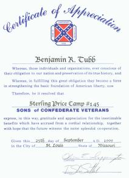

American Civil War Music(1861-1865) |
|---|
|
NOTE: many more Civil War era songs are included among my featured composers' webpages, several of which, such as those by Stephen Collins Foster, George Frederick Root and Henry Clay Work, were among the most popular. SPECIAL NOTE: I am very pleased and honored to have permission to have my arrangement available on a special tribute page for the song Ashokan Farewell (1983) by Jay Ungar which was made "famous" by Ken Burn's PBS miniseries documentary The Civil War (1990). |
1861 |
||
|---|---|---|
| Title | Words | Music |
| A Nation's Trust in God [6 Jul] | Miss Cynthia Bullock | Anononymous; Arranged by S. Lasar |
| A National Lyric | Richard S. Willis | George J. Huss |
| Adieu!! to the Star Spangled Banner for Ever | Ella D. Clark | J. R. Boulcott, Op. 41 |
| Alice Where Art Thou? (Romance) | Wellington Guernsey | Joseph Ascher |
| All Hail to the Flag of Freedom (Grand National March and Hymn) | William W. Skaats | Melody by William W. Skaats; Intoduction and Trio by S. Knaebel |
| An Ode to Washington (A Song for My Countrymen) [1861; renewed 28 Jun 1889] | Henry Drayton | Henry Drayton |
| Another 4th of July, or The Wedding-Day is Coming (Song and March) | Herman Fluegel | Herman Fluegel |
| Arm! Brothers, Arm! | William Oland Bourne | Marcus Colborn |
| Aura Lea | William Whiteman Fosdick, 1825-1862 | George R. Poulton, 1828-1867 |
| Bacon and Greens (A Gastronomic Ditty) | Samuel Cowell | Samuel Cowell |
| Balm of Gilead | anon. | anon.; Arr. by H. T. Bryant |
| Bear On to Victory: or The Old Flag (Vocals No. 8 from National Music) | J. M. Fletcher | E. T. Baldwin |
| Bill and I (A Picket Song) [25 Oct] | Frank Wardlaw | Frank Wardlaw |
| Bonnie Jennie Lee | W. Wallace Manchester, Esq. | E. E. Rogers |
| Camp Song of the Chicago Irish Brigade | P. T. Hade Esq. | Captain William Carter Hughes |
| Cantate | Henri Dubos | C. A. Predigam |
| Care for Them Tenderly (Song) [29 Aug] | anonymous | Mrs. C. L. Stevens |
| Carolina [circa 1861] | Mrs. C. A. B. | Armand Edward Blackmar, 1826-1888 |
| Carrie Bell (Ballad) | Capt. W. C. Capers, C. S. A. | Theodore von La Hache |
| Confederacy March | none | Alfred F. Toulmin of Patapsco Institute |
| Confederate Land (A Patriotic Song) | Lieut. H. H. Strawbridge | Capt. Eugene Chassaignac |
| Confederates' Grand March | none | William H. Hartwell |
| Continental March - Sons of 1776 | none | James E. Magruder |
| Contraband Now (Song and Chorus) [25 Oct] | Frank Wardlaw | Frank Wardlaw |
| Dear Mother, I'll Come Home Again [circa 1861] | Fred. Wilson | Fred. Wilson |
| Deep in a Shady Dell (Song) | Nelson Kneass | Nelson Kneass |
| Defend Now the Red, White and Blue | Frank Wilbraham | Frank Wilbraham |
| Defend the Stars and Stripes | a Member of "The Twelve" of San Francisco | Gustave A. Scott |
| Delaware, My Delaware! [circa 1861] | Henry W. Draper | John R. Sweney |
| Dixie for the Union (for Quartette or Chorus) [c1860] | Frances Jane Crosby, 1820-1915 | Melody by Daniel Decatur Emmett, 1815-1904; [Piano Arr. by W. L. Hobbs]; Quartet Arr. by S. Lasar |
| Dixie War Song | H. S. Stanton, Esq. | Daniel Decatur Emmett; Arr. by A. Noir |
| Down With the Traitor's Serpent Flag (Quartet) | C. C. Flint | Adoniraham Judson Higgins |
| Drummer Boy of the National Greys [17 Aug] | Miss G. P. Burge | Augustus Cull |
| Elegy, on Brig. Gen. Lyon (aka Elegy on the Death of Brigadier General [Nathanial] Lyon [14 Jul 1818 to 10 Aug 1861]) | A Lady | Dr. Fr. Hasse |
| Ellsworth (A Tribute to the Memory of the Late Colonel Ellsworth) [21 Jun] | anonymous | anonymous; Arranged by William J. Lemon |
| Ellsworth's Avengers | A. Lora Hudson | S. L. Cole |
| Ellsworth's Funeral | anonymous | anonymous; Arr. by Miss L. A. Wetmore |
| Every Star - Thirty-Four (Solo and Chorus) | G. Simcoe Lee, Esq. | Charles C. Degenhard |
| Fantasietta on the Star Spangled Banner | none | T. Bissell |
| Farewell to the Star Spangled Banner [1862] | Mrs. Ellen Dowdell Simpson Hundley, 1861 | anon.; Arr. for Guitar by A. G....t |
| Flag of the Heroes (Union and Liberty) |
Oliver Wendell Holmes, 1809-1894 | Charles E. Kimball |
| Freedom's Jubilee (No. 4 from FOUR SONGS) [18 Oct] | Adam D. Logan | Adan D. Logan |
| Freedom's Lament (No. 2 from FOUR SONGS) [18 Oct] | Adam D. Logan | Adan D. Logan |
| Freedom's Rally [27 Apr] | Margaret McNeill | Margaret McNeill |
| Freedom's Rally (No. 1 from FOUR SONGS) [18 Oct] | Adam D. Logan | Adan D. Logan |
| Freedom's Revival (No. 3 from FOUR SONGS) [18 Oct] | Adam D. Logan | Adan D. Logan |
| Freemen Join the Glorious Anthem | Winnie Harland | R. J. Herrero |
| Freemen's Gathering, or Stripes and Stars Unfurl (No. 7 from Horace Waters' Collection of National Songs of America) | Rev. Sidney Dyer | Arr. Augustus Cull |
| General Joseph E. Johnston's Manassas Quick March | none | Adolphus Brown |
| General Lyons Funeral March | none | George W. Hewitt |
| General Nathan Lyon's Funeral March | none | Reverend. G. J. Kredel |
| Gently Rest (from Gems of Southern Melody) [circa 1861-65] | Walter Powell | Friedrich Wilhelm Kucken, 1810-82 |
| Gideon's Band (sung in the Musical Extravaganza of Mazeppa) | anon. | anon.; Arr. by Charles R. Dodsworth |
| God and Liberty (National Hymn) [13 Nov] | Mrs. Thomas M. Coleman | George Felix Benkert, 1831-1876 |
| God and Our Rights | William M. Johnston | Armand Edward Blackmar, 1826-1888 |
| God Defendeth the Right | Mrs. DuBose | Hermann L. Schreiner |
| God Save Our Country's Flag (Song and Chorus) | E. Turney from the Cincinnati Gazette | John S. Porter |
| God Save Our Fatherland (An Union Hymn) (Solo and Chorus) [27 Mar] | a Clergyman of New York | Charles Jerome Hopkins, 1836-1898 |
| God for Our Native Land (National Hymn) [for Male Trio] [20 Apr] | Dr. G. W. Bethune | Dr. G. W. Bethune; Harmonized by James Gaspard Maeder |
| God Save Our Native Land (National Song and Chorus) | George Henry Curtis | George Henry Curtis |
| God Save Our Native Land | J. W. Turner | J. W. Turner |
| God Save Our Noble Union! (Song) | H. Clay Preuss | H. Clay Preuss |
| God Save the Flag of Our Native Land (Patriotic Song and Chorus) | Mrs. Mary R. T. McAboy, of Paris, KY | George Martyn |
| God Save the Land! (National Anthem) [17 Dec] | J. Hilton Jones | J. Hilton Jones |
| God Save the South! (An Anthem) | Earnest Halphin | Earnest Halphin |
| Grand Union Medley | anonymous | Arranged by Carl Bruen |
| Guard of Land and Sea (National Song and Chorus) | T. E. Garrett Esq.; German translation by A. Loehr Esq. | F. Woolcott |
| Hail Columbia!!! and Star Spangled Banner [8 Jun] | Prof. Fayles | Melody by Prof. Fayles; Arranged by Samuel Jackson |
| Hark! To Arms! Our Country Calls Us! (Army Song) [c1861] | E. W. Locke | E. W. Locke |
| He Was Famed for Deeds of Arms (Patriotic Song) | Cherry | Melody by Dominico Corri; Adapted and Arranged by James Gaspard Maeder |
| Home of the Free (No. 5 from National Melodies by Celebrated Composers) | John Jacobs, Jr. | John Jacobs, Jr. |
| Hurrah! for Our Flag! (Quartette) | J. H. Wheeler | J. H. Wheeller |
| Hurrah for Rhode Island! | Gen. Van Zandt | E. A. Payne |
| Hymn for the Union | Andon D. F. Randolph | Anson D. F. Randolph |
| I Cannot Mind My Wheel, Mother (Ballad) | Charles Swain | Oscar Schalk |
| I Come, I Come, from Dixie! [11 Jun] | Frank Wilder>/a> | Frank Wilder |
| I Love the Sunny South (Solo and Chorus) | Col. L. T. Dogal | Henry Schoeller |
| I'm Going Home to Dixie (Sequel to I Wish I Was in Dixie Land) | Daniel Decatur Emmett, 1815-1904 | Daniel Decatur Emmett, 1815-1904; arranged by Claudio S. Grafulla, 1810-1881 |
| I Would I Were a Slave Again | C. A. Grace | C. A. Grace |
| In Spite of All the World (Song and Chorus) [1 Oct] | Niuno | Niuno |
| It Grows Very Dark, Mother, Very Dark (No. 4 from Heart Melodies: A New Set of Songs | anonymous | S. Wesley Martin |
| Jefferson D. | William B. Justice | William B. Justice |
| John Brown's Song [20 Jul] | anonymous | Phillip Simonds |
| Katey's Letter (Irish Song) | anonymous | anonymous |
| Keep It Before the People (Song and Chorus) | anonymous | S. W. Paine |
| Keep Step With the Music of Union (A National Hymn) [c1861; 19 Mar 1863] | William Ross Wallace, 1819-1881 | George Frederick Bristow, 1825-1898 |
| Kiss Me Good Night, Mother (Ballad) [circa 1861] | anonymous | Frank Ellis |
| Kiss Me Good Night, Mother (A Ballad) (No. 4 from New Songs by H. S. Thompson) | anonymous | H. S. Thompson |
| Kitty Wells | anon. | Thomas Brigham Bishop, 1835-1905 |
| Land of the South (Patriotic Song) | Arranged by A. F. Leonard, Esqr. | Jullius Muller |
| Liberty's Call or Hurrah for Abe and Andy [circa 1861] | W. S. Blanchard | L. B. Starkweather |
| Liberty's Reveille | W. S. Hurlock M. D. | James W. Porter |
| Long Live the Sixty-Ninth (Patriotic Song) [29 Aug] | M. Mullaly | John J. Daly |
| Lord! Save Our Native Land (National Hymn) (Tune: America) | John J. Frazer M. D. | Adapted and Arranged by John J. Frazer |
| Love Me! [circa 1861] | Elisabeth "Eliza" Cook, 1818-1889 | A. W. Greatorex |
| Mabel Clare (Song and Chorus) | Rosetta Lunt | A. J. Higgins |
| Madmen Spare That Flag [2 Jul] | Mrs. Lena Drake | Augustus Cull |
| Major R. Anderson's Grand March [30 Apr] | none | Charles Grobe, 1815-1880+, Opus 1312 |
| March to the Field (Song and Chorus) [14 Dec] | George King | George King |
| Maryland Guard Galop | none | Charles Denstedt |
| May God Save the Union (Union Hymn) | Reverend G. Douglass Brewerton | Carl Wolfson |
| Men of Thought, Be Up and Stirring (from The Zephyrs: A Choice Collection of Quartetts for Singing Societies and Social Meetings) | S. M. Grannis | S. M. Grannis |
| Missouri [Bright Land of the West] | Harry McCarthy | Harry McCarthy |
| Morning Prayer (Quartett for Male Voices) (No. 56 from The Musical Review and Music World, Vol. XII by Theo. Hagen) | Joseph Freiherr[Baron] Von Eichendorff (1788-1857) | George A. Mietzke, (1838-1900+) |
| No Flag But the Old Flag (Solo and Chorus) | Jennie M. Parker | Charles G. Degenhard |
| No Love Like a Mother's Love, or, Rock Me to Sleep Mother | Florence Percy [pseud. for Elizabeth Akers Allen, 1832-1911] | F. H. Pease |
| Ole Shady; or the Song of the Contraband | Benjamin Russell Hanby, 1833-1867 | Benjamin Russell Hanby, 1833-1867 |
| On Freedom's Altar Glows a Fire! | a Lady of Philadelphia, PA | a Lady of Philadelphia, PA |
| On to the Battle | John E. McCaullay | Henry G. Thunder |
| Our Banner of Glory! (National Hymn) | G. W. Cutter, Esq. | William Cumming Peters, 1805-1866 |
| Our Country Forever (A National Air, With Chorus) | from the Phildelphia Press | Melody by John Seltzer; Arranged by Edmund Mattoon |
| Our Country's Flag | G. Gumpert | G. Gumpert (Arr. by F. Losse) |
| Our Country Right or Wrong (New Patriotic Song) | George Pope Morris, Esq. | E. Muzio |
| Our General's Quick Step | none | C. S. Grafulla |
| Our Good Ship Sails To-night (Ballad) | Stephen C. Massett, 1820-1898 | Stephen C. Massett, 1820-1898 |
| Our Laddie's Dead, Jem (Ballad) | Mrs. L. Both Hendriksen | Otto F. Jacobsen |
| Our National Flag (Union, God and Liberty) | W. Gibbs, Esq. | P. J. Whipple |
| Our Native Land (Song of Liberty) | James Willard Morris> | James Willard Morris |
| Rain on the Roof | Coates Kinney | James Gowdy Clark, 1830-1897; Arranged by F. M. Pease |
| Rally for the Banner | George M. Dowe | Air: Glory Hallelujah |
| Rise for Your Country (A Patriotic Call to Arms) | J. W. Pope | J. W. Pope |
| Rock Me to Sleep | Florence Percy (alias for Elizabeth Akers Allen, 1832-1911) | Edward Mack, 1826-1882 |
| Rock Me to Sleep Mother (20th Edition; Ballad) | "Florence Percy" (Mrs. Taylor, Portland, Maine) [alias for Elizabeth Akers Allen, 1832-1911] | Mrs. Willima K. Cutler |
| Rule Columbia (National Song & Chorus) | Dr. J. Harnes | B. Augusto |
| Sadly the Bells Toll the Death of the Hero (Song) [24 May] | E. A. S. | A. Birt Tobey |
| Skedaddle | George Danskin | George Danskin |
| So Jeff Davis Is Acoming (Song of the Times) [28 Dec] | Richard Hinchcliffe | James R. Murray |
| Somebody's Darling | J. B. Abbott | J. B. Abbott |
| Song for the Times or Bully For All | H.Angelo | W. H. C. |
| Song of the Citizen Guards | adapted by J. Val Cowling | Henry Russell (tune: Cheer, Boys, Cheer) |
| Song to Our Flag (National Song & Chorus) | A. W. Burns | George Washington Thomas Hewitt, 1811-1893 |
| Southern Marseillaise (air: Marseillaise Hymne) | Adapted by Mrs. L. Fanshaw | [Claude] Joseph Rouget de L'isle |
| Stand by the Union (Army Song and Chorus) [No. 11 from National Melodies] | W. T. Adams, Esq. | [Cunnington and Balfe]; Arr. by C. Butler from The Enchantress |
| Sumter (A Ballad for 1861) | E. O. M. | Elizabeth Sloman |
| The Abe-iad [circa 1861] | J. P. McRebel | F. Bartenstein |
| The American Flag [first arranged for guitar in 1847] | Joseph Rodman Drake, 1795-1820 | Vincenzo Bellini, 1801-1835; arranged anonymously |
| The Banner of the Sea (National Song and Chorus) | D. Brainard Williamson | George W. Hewitt |
| The Basket Maker's Child (Solo and Chorus) | H. S. Thompson | H. S. Thompson |
| The Brass-Mounted Army (circa '61-5) | an anonymous soldier of Col. A. Buchel's Regiment | adapted from Wait for the Wagon (1852) by R. Bishop Buckley |
| The Confederate Flag! (National Air) | Mrs. C. D. Elder, of New Orleans, LA | Sig. G. George |
| The Flag of My Country (No. 1 from Flowers of the Union) | David Bates | James Cox Beckel |
| The Flag of the Free (National Ode) | Harrison Millard, 1829-1895 | Harrison Millard, 1829-1895 |
| The Flag of the Free Eleven (Op. 561) | M. F. Bigney | J. T. Viereck |
| The Flag of the South (A Voice from the Old Academy, Memphis, Tenn.) | Mrs. Anna K. Hearn | Dr. O. Becker |
| The Free Market (A Local Song) | Y. W. Overall | Thevon Lehache |
| The Gal With the Balmoral | Fred. Wilson | R. J. Herrero |
| The Gift of Our Fathers (A Union Anthem!) | John M. Crosland | John M. Crosland; Arranged for the Piano by James W. Porter |
| The John Brown Song, or Glory Hallelujah (with New and Revised Words) [7 Dec] | William Steffe?, 1830-1890 | William Steffe?, 1830-1890 |
| The Martyrs of Baltimore | J .W. Turner | J. W. Turner |
| The Minute Men (Ballad) | J. B. Hawkins | J. B. Hawkins |
| The Moon Rose O'er the Battle Plain (Song Ballad) | anon. | anon.; arranged by William J. Lemon |
| The National Hymn | William Lewers | Bertrand A. Hoffacker |
| The Origin of Yankee Doodle | George Pope Morris, Esq., 1802-1862 | George Pope Morris, Esq., 1802-1862 |
| The Patriot's Call (Song and Chorus) (Opus 9) | Miss J. P. Burge | C. Jerome Hopkins |
| The Patriot's Fatherland (aka The Patriot's Father-land) | Edward E. Law Esq. | anonymous; Adapted by J. A. Getz |
| The Patriot's Invocation (No. 6 from Gems of Song) | William B. Brown | William B. Brown |
| The Rataplan (from the 1840 Comic Opera La Figlia Del Reggimento) | Charles Jefferys | Gaetano Donizetti, 1797-1848; Adapted by Charles W. Glover |
| The Red, White & Blue of '61 | G. Gumpert | A. Bachmann |
| The Soldiers' Death Song [circa 1861-1865] | Captain Edgeworth | Richard L. Edgworth Esq. |
| The Song of the "Contrabands" ("O Let My People Go!") | Rev. L. C. Lockwood | Rev. L. C. Lockwood; Arr. by Thomas Baker |
| The Song of the South | James H. Huber | James H. Huber |
| The Southern Cross | Charles Ellerbrock | Charles Ellerbrock |
| The Southron's Watchword (aka The Southron's Watch-Word!) ("The Grave of a Hero or Victory") | M. F. Bigney, Esq. | Stephen Glover |
| The Spirit of '61 (or, Our Banner Shall Wave Forever, or Up With the Flag of the Stars and the Stripes) (War Song and Chorus) | W. W. Story | Thomas H. Howe |
| The Star Spangled Banner (Song & Chorus) (No. 2 from National Songs) | Francis Scott Key, Sep. 1814 (1780-1843); verse 5 (1861) by Dr. Oliver Wendell Holmes (1809-1894) | John Stafford Smith, Sep. 1814 (1750-1836) |
| The Stars and Stripes | J. T. F. | O. B. Brown |
| The Stars and Stripes (A National Song) | Francis De Haes Janvier | George Felix Genkert |
| The Stars and Stripes Forever (National Patriotic Songs, No. 56) | a Lady | William J. Lemon |
| The Stars and the Stripes, the Flag of the Free | Henrie L. Frisbie | Henrie L. Frisbie |
| The Stripes and the Stars | George A. Mietzke, 1838-1900+ | George A. Mietzke, 1838-1900+ |
| The Union Army March | none | George A. Mietzke, 1838-1900+ |
| The Union Soldier's Hymn (A National Song & Melody) | Thomas L. Smith | Augustus Paulsen |
| The Volunteer, or, It Is My Country's Call | Harry Maccarthy | Harry Maccarthy |
| The Volunteer's Mother | George A. Mietzke, 1838-1900+ | George A. Mietzke, 1838-1900+, Opus 13 |
| Then Wave Ye Stripes! (An Anthem for All Time) | John F. White | Miss Mary F. Howell |
| There Are No Tears in Heaven | C. M. Ballard | John C. Baker |
| There Was an Old Soldier (circa '61-5) | anonymous | anonymous |
| Three Cheers for Our Banner (No. 11 from HORACE WATERS' Collection of National Songs) | M. E. Williams | A. A. Allen; Arr. by Augustus Cull |
| To Arms! To Arms! [16 Apr] | William F. Otten L. L. D. | William F. Otten L. L. D.; arr. Vandermeyde |
| To Whom It May Concern (To Abraham Lincoln, President of the United States) | W. Dexter Smith, Jr. | Arranged by Carl Lazare |
| Trooper's Death ([about events on 25 Oct 1861 in Springfield, MO], published in 1862)[source photocopy submitted by John Maurath] | anonymous, translated from a German atudent song by Captains Raymond and Howard | anonymous; arranged by Captains Raymond and Howard |
| Union and Liberty (National Anthem) | Philip F. Synder | Gustave Blessner, 1808-1888 |
| Union Volunteers (No. 4 of 6 from Root & Cady's Patriotic Songs | E. C. Saffery | E. C. Saffery |
| United Forever! | T. G. Spear, Esq. | G. T. Evans |
| Vale of Rest [circa 1861-5] (No. 9 from Gems of Southern Song) | Nelson | Nelson |
| We Conquer or Die | James Pierpoint, 1822-1903 | James Pierpoint, 1822-1903 |
| Whack, Row De Dow! or, A Hunkey Boy Is Yankee Doodle | Miss Fanny Herring | Arranged by W. L. Hobbs |
| Where Liberty Dwells, There Is My Country (No. 7 from HORACE WATERS' Collection of National Songs) | Rev. G. S. Plumley | Rev. G. S. Plumley |
| Why, Soldiers, Why? (aka Why, Soldiers, Why Should We Be Melancholy Boys?) (Camp Song & Military Polonaise) | Major General James Peter Wolfe, 1720-1859 | S. D. S. |
| Yankee Lasses A and L (Comic Song and Chorus) | anon. | anon. |
1862 |
||
|---|---|---|
| Title | Words | Music |
| A Cheer for the West | Park Benjamin Esq. | Reverend J. L. Lower |
| A Cypress Wreath for Lancashire | William Downing Evans | William Downing Evans |
| A Mother's Prayer [21 Jul] | anonymous | Otto Sutro |
| All Forward! (Garibaldi's Hymn) [aka Canzione Italiana, 1858] [c1862; 30 Aug 1864; 16 Jan 1865] | Luigi Mercantini, (1821-1872) | Alessio Olivieri; Arranged by Pasquale Rondinella |
| All Hail to the Day (Patriotic Song) [26 May; 17 Jul] | C. M. Sawyer | W. Williams |
| All's Well (Song) [18 Apr; 19 Nov] | J. Gordon Emmons | Thomas D. Sullivan |
| Abraham's Draft (600,000 More) [c1862; 16 Jan 1863] | J. W. Turner | anonymous; Arranged by J. W. Turner |
| Adams and Liberty (Popular Melody Played by the Military Bands) | none | Transcribed for Piano by Adolph Baumbach, 1830-1880 |
| Angel Friends | anonymous | Joseph Eastburn Winner, 1837-1918 |
| Anthem of Liberty | Richard Storrs Willis, 1819-1900 | Richard Storrs Willis, 1819-1900 |
| Bear Them Home Tenderly (Ballad) [9 Apr] | T. H. Howe | T. H. Howe |
| Beauregard's Retreat from Shiloh [30 Jun] [includes The New Dixie sung to the tune of Jeff Davis' Retreat with variations] | none | Skedaddles |
| Benton Barracks Parade March | none | Julius Tenzler |
| Blest Banner of Freedom (No. 3 from SONGS for MANY MOODS) [18 Jul] | J. G. Gorman | Theodore F. Seward |
| Blue Eyed Soldier Boy | Jennie Caulfield | Hermann Th. Knake |
| Champions of Freedom (Song and Chorus) [29 Mar] | C. C. Haven | John Fletcher |
| Clear the Tracks Rebel Legion [26 May] | from the Vanity Fair magazine | William Howard Doan |
| Columbia! Our Country Forever! (Song and Chorus) [5 Dec] | M. L. Hofford, A. M. | George W. Hewitt |
| Columbia, Queen of the Land (National Song) | George W. Elliott | Harvey B. Dodworth |
| Columbia Calls (Patriotic Song and Chorus) [9 Apr] | Daniell Bliss Dudley | W. O. Perkins |
| Columbia the Hope of the World (A New NATIONAL SONG) [24 Mar] | Maurice Bingham | Emil Stadler |
| Come, at Your Country's Call; or, Join Brave McClellan's Boys | Kate Moncrieff | anonymous (Adapted to a Favorite Melody) |
| Come in and Shut the Door (Song and Chorus) | anon. | Frederick Buckley, 1815-1864 |
| Come Rally Boys Around Our Flag (A New Patriotic Song and Chorua) [3 Oct] | Mrs. E. A. Souder | John Darcie |
| Coming at Last! | Earnest Halphin | Earnest Halphin |
| Commodore Nutt's Grand March | none | Henry Schroeder |
| Corn Is King! | anonymous, from the Continental Monthly | Hiram T. Merrill |
| Dead on the Battle Field | M. L. Hofford | J. C. Beckel |
| Dixie Doodle (A Song) | Mrs. Margaret Weir | Mrs. Margaret Weir |
| Elegy on the Death of Governor Harvey [Louis Powell Harvey, 22 Jul 1820 - 19 Apr 1862] | from the Wiscnsin State Journal by a Lady in her teens | J. S. Allen |
| Elegy on the Death of Lt. Col. Ch. D. Deux [11 Jun 1862] | James R. Randall | George M. Loening |
| Excelsior | Henry Wadsworth Longfellow, 1807-1882 | John Blockley, Miss Lindsay, Samuel Glover |
| For Donelson Is Ours (Patriotic Song and Chorus) | Amanda T. Jones | Charles G. Degenhard |
| Freedom, Truth and Right (Song and Chorus) [11 Jun] | H. F. Donlevy | Carl Heinemann |
| Fremont Hussar's March | none | Charles Fradel |
| Gabriel Blows the Trumpet (Battle Song & Chorus) | S. W. Paine | S. W. Paine |
| General Grant's Grand March | none | Edward Mack, 1826-1882 |
| General Lyon's Memorial (Song and Chorus) | Chareles C. H. D'Entremont | J. W. Turner |
| General Scott and Corporal Johnson (Song) | Bayard Taylor | David A. Warden |
| General Sigel's Grand March | none | T. J. Martin |
| Gentle Annie Ray (Song and Chorus) | A. Jones | Frederick Buckley, 1815-1864 |
| Glory Hallelujah (Marching Hymn) [aka John Brown's Body] | anonymous | anonymous; New, Improved & best Edition, Adapted & arranged by William Dressler |
| Glory, Hallelujah! or Onward, Band Victorious | W. J. Wetmore, M.D. | Arranged by Gustave Ascher |
| Glory! Hallelujah! With Brilliant Variations (Op. 1402) | none | Charles Grobe |
| God! and Our Native Land | A. Lemuel Adams | A. Lemuel Adams |
| God Is With the Right (National Song and Chorus) [30 Jul] | Maurice Bingham | Emil Stadler |
| God Save Our Country's Flag [1 Jul] | E. Turney | Robert Lowry, 1826-1899 |
| God Save the Grand Old Stars and Stripes! [9 Apr] | John L. Sullivan, Jr., M. D. | Mrs. S. G. Knight |
| Going to the Wars | G. E. S. Ellis | A. B. Irving |
| Grace Darling (Song & Chorus) [circa 1862] | anon. | W. Walmsley, Jr. |
| Hark! the Signal (No. 13 of 15 from HORACE WATERS' Collection of NATIONAL SONGS Arranged for the Piano Forte) [15 May] | Bayard Taylor | I. H. E. Bornhardt |
| Harry's Music Box (Bagatelle) [17 Sep] | none | George William Warren |
| He Has Fallen! [3 Mar] | J. T. C. | George Funk |
| Here's Your Mule | C. D. Benson | C. D. Benson |
| Hip, Zou, Zou (Song and Chorus) [28 Aug] | J. W. Turner | Melody by C. A. C.; Arrangement by J. W. Turner |
| Hold On Abraham (Uncle Sam's Boys Are Coming Right Along) (Song and Chorus) | William Batchelder Bradbury, 1816-1868 | William Batchelder Bradbury, 1816-1868 |
| How Are You, Telegraph! (Song and Chorus) | William Collins | George W. Work |
| Hurrah! for the 44th! [21 Nov] | Straws Jr. | Augusto Bendelari |
| Huzza! Huzza! Our Union Forever (National Song and Chorus) [c1862; 12 Jan 1863] | M. L. Hofford | George W. Hewitt |
| Hymn of Columbia [c1862; 12 Sep 1863] | Harvey B. Dodsworth | Harvey B. Dodsworth |
| Hymn to Liberty (Solo and Chorus) [21 Nov] | Edwy Wells Foster | Edwy Wells Foster |
| Isn't It a Wonder, or Caddy-Cadunk | Henry Wood, Esq. | Gustavus Geary |
| Jeff Davis (A New Irish Song of the times) | T. L. Donnelly | T. L. Donnelly; Arr. Emil Stadler |
| Jonathan to John | Hosea Bigelow | F. Boott |
| Johnathan's Appeal to Caroline, or, Mr. North to Madame South | Miss M. Stoddard | Miss M. Stoddard |
| Killarney (The Last Song) | Michael William Balfe, 1808-1870 | Michael William Balfe, 1808-1870 |
| Kingdom Coming (c1862) [compare H. C. Work's song] | William Howard Doane | William Howard Doane |
| Laura Anna | W. C. Baker | W. C. Baker |
| Liberty and Union (Quartette) [13 Feb] | A Lady | John Fletcher |
| Lizzie Lee | Peter F. Stout, Esq. | Mathew Keller |
| Marching Along (Army Song) | Adapted by Mrs. Mary Ann Kidder | William Batchelder Bradbury, 1816-1868 |
| Maryland Fair Maryland (Answer to Maryland, My Maryland) | Idlewild | J. C. Beckel, Opus 1200 |
| Mother Can This the Glory Be (aka Mother! Can This the Glory Be?) | Stephen Ralph Glover, 1812-1870 | Stephen Ralph Glover, 1812-1870 |
| My Love Is on the Battle Field! (Song with Chorus) | Robert Morris, Esq. | Alfred Delaney |
| Oh! Give Us a Navy of Iron | D. Brainerd Williamson | James W. Porter |
| Old Christmas (from The Illustrated London News) [20 Dec] | John George Watts | John Murby |
| Ole Massa on He Trabbels Gone (Quartette) [15 Feb] | John Greenleaf Whittier, 1807-1892 | S. K. Whiting |
| On the Shores to Tennessee! Or, Return of the Old Flag! | Ethel Lynn Beers | E. T. P. |
| Our Country and Flag (A National Song and Chorus) | Richard Culver | anon.; arranged by Richard Culver |
| Our Own Brave Boys (Song and Chorus) | Myra Mc D. Hendrick | Myra Mc D. Hendrick |
| O, Wrap the Flag Around Us Boys [26 Sep] | R. Stewart Taylor | R. Stewart Taylor |
| Pass Under the Rod (Sacred Song) | Mrs. Mary Stanley Bunce Palmer Dana Shindler, 1810-1883 | Mrs. Sue Ingersoll Scott, 1834-1920+ |
| President Lincoln's Grand March | none | F. B. Heumsmuller |
| Pro Patria! (A National Song for The Fourth of July, 1862) [22 Feb] | Pilgrim John | Pilgrim John |
| Rally Round the Flag | James T. Field, Esq. | William Batchelder Bradbury, 1816-1868 |
| Rally Round Your Flag Boys (Song and Quartette) | Fannie Fackrell | Fannie Fackrell |
| Rebellion's Weak Back | F. Wilmarth | F. Wilmarth |
| Reply to the Bonnie Blue Flag | Mrs. C. Sterett | M. H. Frank |
| Rising of the People (The Drum-Tap Rattles Thro' the Land) (National Patriotic Song) | N. P. Beers | M. Colburn |
| Sally Come Up | T. Ramsey | E. W. Mackney; Arr. by Frederick Buckley |
| Save Our Flag! (Patriotic Song and Chorus) | Mrs. Sara Wolverton | J. A. Getz |
| Shoulder Arms! (Song) | C. G. Dinn | Zel' |
| Six Hundred Thousand More (Song and Chorus) | A Volunteer | A Volunteer |
| Song of the Negro Boatmen | John Greenleaf Whittier, 1807-1892 | Robbins Battell |
| Song of the Negro Boatmen | John Greenleaf Whittier, 1807-1892 | J. W. Dadman; Arranged by Albert S. Allen |
| Stars of Liberty (Patriotic Song) (Song and Chorus) (A Tribute to Liberty) [21 Jun] | Mrs. E. L. Webster | Mrs. E. L. Webster |
| Stonewall Jackson's Way | anonymous | anonymous |
| Stonewall Quick Step | none | Charles H. Kehr |
| Strike! Ye Sons of Liberty!! | C. W. W. | C. W. W. |
| Take Your Gun and Go, John [26 Sep] | anonymous | Hiram T. Merrill |
| Taps [July] | anonymous | Adapted from Tattoo by General Daniel Adams Butterfield, 1831-1901 |
| The American Standard | George Pope Morris | Antonio Bagioli |
| The Banner Song (The Union Forever) | Mrs. S. E. Wallace | William Dressler |
| The Battle of Liberty (Patriotic Song and Chorus) | George Pope Morris, 1802-1864 | Richard Culver |
| The Battle of Shiloh, or Pittsburgh Landing (April 6th & 7th, 1862) [quotes Sunday Morning] [26 May] | none | Charles Grobe, 1815-1880+; Opus 1402 |
| The Battle Prayer, or The Soldier's Prayer Before Battle | Walter Maurice | Himmel |
| The Battle of Shiloh Hill (circa '62-5) | M. B. Smith (Company C, 2nd Regiment, Texas Volunteers) |
Tune: Wandering Sailor |
| The Bells of Shandon (Irish Song) | Reverend Francis Mahoney (Father Prout) | anon.; arr. by T. D. Sullivan |
| The Bombardment and Surrender of Fort Pulaski (April 10, & 11, 1862) (aka Capture of Fort Pulaski) (No. 5 from Pictures of the War) | none | Charles Grobe, 1815-1880+; Opus 1406 |
| The "Contraband's" Hotel (Comic Song) | anon. | J. Rud Adam |
| The "Contraband" of Port-Royal | John Greenleaf Whittier, 1807-1892 | Ferndinand Mayer |
| The Contrabands Jubilee (Song & Chorus) | John Greenleaf Whittier, 1807-1892 | A. J. Higgins |
| The Flag With Thirty Four Stripes or, Hurrah! For the Dear Old Flag With Every Stripe and Star (A Patriotic Song, with Chorus) | General W. H. Hayward | Professor C. S. Root |
| The Freedman's Song, or the Song of the Negro Boatman (aka The Freedman's or Negro Boatman Song) | John Greenleaf Whittier, 1807-1892 | Robert Goldbeck |
| The Grave of Little Nell (Song and Chorus) | William F. Gilchrest | E. G. Sirret |
| The Land of the Free; The Children's Union Song [7 May] | William Orland Bourve, Esq. | Edward Roberts |
| The Last Broadside [10 Sep] | Elizabeth Townsend Porter Beach, 1827-1883 | Frederick Buckley, 1815-1864 |
| The Little Market Woman and Her Little Dog (Comic Song) | Mother Goose | W. H. B. |
| The Mudsills Are Coming (A New Army Song) | E. Bowers | G. L. J. |
| The Music-Box Galop (for the Piano) | none | Chr. E. Hering |
| The National Medley Song | various | [adapted and] arranged by V. L. Remington |
| The New Skedaddle [26 Sep] | R. D. Scott | R. D. Scott |
| The New York Volunteer | anonymous | G. A. Hodson |
| The Noble George McClellan (Song and Chorus) | Rev. Edwin H. Nevin | anonymous; adapted to Old Rosin the Bow [1838] |
| The Northern Star (Patriotic Song and Chorus) | Edward H. C. Clark | Arranged for the Piano by Frederick H. Cluett |
| The Old Chieftan (Song and Chorus) | Edwin Henry | Edwin Henry |
| The Orphan's Prayer (Fantasia) | none | Edward Mack, 1826-1882 |
| The Picket (Ballad) | "Una" | William Cumming Peters, 1805-1866 |
| The Rebellion (A Song for the Times) | anonymous | anonymous; adapted from "The Battle Hymn of the Republic" aka "John Brown's Body" |
| The Rebels' Retreat or The Double Quick from Yorktown [12 May] | none | A dam Yankee |
| The Return of the Old Flag; or, Sailing Up the Tennessee (aka The Flag's Come Back to Tennessee) | Corporal Lippincott of the 57th Pennsylvania Regiment | Air from (Dominico) Gaetano (Maria) Donizetti, 1797-1848; Arranged by David A. Warden |
| The Sea Witch (A Song of the Sea) | D. W. Rockwell | William J. Wetmore, M. D. |
| The Skating Quadrille [c1861; 26 Sep 1862] | none | A. J. Vaas |
| The Soldier's Vision | Cornelius Everest, 1820-1885+ | Cornelius Everest, 1820-1885+ |
| The Spirit of America, the Union, the Age (Song and Chorus) | anonymous | E. C. Lambarty |
| The Under Dog in the Fight | anonymous | A. Judson Higgins |
| The Union Battle Cantata [31 Jan] | G. Gumpert | G. Gumpert; Arranged by F. Losse |
| Thou Wouldst Call Me Back From the Echoless Shore (A Mother's Reply to the Popular Ballad Rock Me to Sleep) | anonymous | William Cumming |
| Three Cheers for the Union! (Song and Chorus) | Mrs. Earnest | Mrs. Earnest |
| Three Hundred Thousand More! | William Cullen Bryant, 1794-1878 | George R. Poulton, 1828-1867 |
| Uncle Abra'm, Bully for You! (Song and Chorus) | J. Smith, Jr. | G. R. Lampard |
| Uncla Sam, What Ails You? (Song and Chorus) | Charles C. Sawyer | John M. Loretz |
| Up! and Arm! (A Song for the Nation) | E. H. | anon. |
| Violetta, or I'm Thinking of a Flower | Morgan C. Kennedy, Esq. | Edward O. Eaton |
| Viva Columbia (A National Song) [Dec 20] | G. Gumpert | F. Loss� |
| Wake Up Jake (No. 42 from Comic Songs) | George Holman | George Holman |
| We Are Coming, Father Abraham, Three Hundred Thousand More (Song and Chorus) | James Sloan Gibbons | Arranged by J. A. Getze |
| We Do Think of Thee at Home (Reply to Do We Think of Thee?) | Cornelius Everest, 1820-1885+ | Cornelius Everest, 1820-1885+ |
| We Sleep, But We Are Not Dead (Patriotic Song) | James Ryder Randall, 1839-1908 | James Ryder Randall, 1839-1908 |
| We Wait Beneath the Furnace Blast (Song and Quartette) | John Greenleaf Whittier, 1807-1892 | W. O. Perkins |
| Year of Jubilee, or Kingdom Has Come [18 Apr] | "Sambo" | "Sambo" |
| Young Eph's Lament; Or, Oh, Whar Will I Go If Dis War Breaks de Country Up |
J. B. Murphy | anonymous |
| Your Mission | Ellen Maria "Jesse" R. (nee Huntington)] Gates, 18??-1920 | Sydney M. Grannis |
1863 |
||
|---|---|---|
| Title | Words | Music |
| '63 Is the Jubilee [aka 'Sixty-Three Is the Jubilee] [23 Mar] | J. L. Greene | D. L. French |
| A Prayer for Peace | anonymous | Otto Sutro |
| A Prayer for the Absent (Ballad) | Miss Helene Osgood | James Gaspard Maeder |
| A Toast to New Year | J. M. Swift | J. H. Ross |
| Abraham My Abraham (Song and Chorus) [Tune: O Tannenbaum, O Tannenbaum!, 1799] | William K. O'Donoughue Esqr. | anon.; Arr. by Charles G. Degenhard |
| After the Battle (from ROSE WREATH) [23 Jun] | Frank Howard (alias for Delos Gardiner Spaulding, 1813-1884) | Frank Howard (alias for Delos Gardiner Spaulding, 1813-1884) |
| Ah! He Kissed Me When He Left Me (Song and Chorus) [31 Oct] | Mrs. Cornelia D. Rogers | Lillia Downling |
| All Quiet, Hark! No Cannon's Roar | J. P. | Mrs. J. S. Reed |
| Always Stand on the Union Side | M. C. Bisbee | M. C. Bisbee |
| Angel Mary (Ballad) | Mrs. Effie A. Parkhurst, 1836-1918 (aka Mrs. Druer) | Mrs. Effie A. Parkhurst, 1836-1918 (aka Mrs. Druer) |
| Angel Mother, I'm Coming Home | W. Dexter Smith Jr. | M. J. Kessur |
| Army Hymn | Oliver Wendell Holms, 1809-1894 | Otto Dresel |
| Away Goes Cuffee or Hoorah for 63 [9 Jun] | L. B. Starkweather | L. B. Starkweather |
| A Quaker Letter to Lincoln (Ballad) [9 May] | Elmer Ruan Coates | E. M. Bruce |
| Battle Hymn of the North | J. L. Earll | George Barnum |
| Battle of Fort Donelson (Song and Chorus) [c1863; 11 Jan 1864; 5 Aug 1865] | Rev. John Kidd | E. Grundy Esq. |
| Be True to the Union (Song and Chorus) | L. E. Bradish | L. E. Bradish |
| Beauregard's Charleston Quickstep | none | H. L. Schreiner |
| Belle Missouri in reply to Maryland, My Maryland |
Howard Glyndon | based on O Tannebaum; arr. by Hermann Schneider |
| Bonnie Blue Flag With Brilliant Variations (Opus 1459) | none | Charles Grobe |
| Brave McClellan's Is Our Leader Now, or Glory Hallelujah! | Mrs. Mary Ann Kidder | anon.; arranged by Augustus Cull |
| Break It Gently to My Mother (Song and Chorus) [22 Aug] | M. A. Geuville | Frederick Buckley |
| Breathe Low Thou Gentle Wind (A Requiem) | anonymous | Thomas Spencer Lloyd |
| Brother's Fainting at the Door (Song [and Chorus]) | E. Bowers | P. B. Isaacs |
| Close His Eyes! His Work Is Done (A Dirge for a Soldier) (Song and Chorus) | George H. Boker | Asa B. Hutchinson |
| Columbia's Glorious Banner [1 May] | William Sutherland | Joseph Paramore; arranged by Professor H. Enders |
| Come Back, Massa, Come Back! (Song and Chorus) | [I.? or] J. W. Lucas | Gomez |
| Come In Out of the Draft, or The Disconsolate Conscript (aka "How Are You Conscript?") (Comic Song) [3 Oct] | Ednor Rossiter | B. Frank Walters |
| Come Rally Round Our Flag, My Boys (National Song and Chorus) [23 Feb] | Honorable B. D. Taylor, M.C. | William Clifton |
| Cousin Jedediah | H. S. Thompson | H. S. Thompson |
| Christ Will Care for Mother Now (In Answer to "Who Will Care for Mother Now") [4 Sep] | W. H. R. | J. F. W.; arranged by Mrs. Parkhurst |
| Cuffee's War Song [8 Aug] | L. B. Starkweather | L. B. Starkweather |
| Daisy Deane | T. F. Winthrop | James Ramsey Murray, 1841-1905 |
| Dat's My Philosophy | Edward Berry | Edward Berry |
| De Darkie's Rally (aka The Darkies Rally) | W. W. Partridge | W. W. Partridge |
| De Darkies Rallying Song (Song and Chorus) [c1863; 11 Jan 1864; 6 Aug 1865] | J. O'Conner | J. P. Jones |
| De United States Hotel [7 Feb] | One of de Boardahs | M. G. Bisbee |
| Dear Mother, Call Me Home (Ballad) | Finley Johnson | W. Virgil Wallace |
| Dearest Nell (Song and Chorus) | R. T. Pettes | E. Bischoff |
| Dirge [sung 19 Nov; filed 17 Dec] | James G. Percival | Alfred Delaney |
| Do They Think of Me at Home? | C--- | Henry L. Schreiner |
| Down by the River | H. S. Thompson | H. S. Thompson |
| Drummer Boy of Antietam (A War Ballad) | Albert Flemming | Albert Flemming |
| Dying on the Battle Field [27 Jun] | Josephine Braham | Melody by Josephine Braham; Arranged by John M. Loretz, Jr. |
| Emancipation Hymn (Quartette and Chorus) | R. T. L. | Manuel Fenollosa |
| Fair Columbia (National Song and Chorus) [1863; 1891] | Eugene Batchelder | Julius Eichberg |
| Fairies Have Broken Their Wands (No. 1 from 3 New Songs) | Thomas Hood | F. W. Rosier |
| Falling Into Line (Army Song and Chorus) | M. F. H. Smith | M. F. H. Smith, Opus 17 |
| Farwell Dearest Brother[claimed 1863; filed 11 Jan 1864] | Mr. Copley | N. B. Hollister |
| Follow the Flag![claimed 1863; filed 11 Jan 1864] | Rev. W. B. Slaughter | O. F. Barbour; arranged by John Molter |
| Fremonts Battle Hymn (Quartett) [2 Mar] | James Gowdy Clark, 1830-1897 | James Gowdy Clark, 1830-1897 |
| From the Red Battlefield, (or The Dead Volunteers) (Quartette) [29 Nov] | J. W. Barker | N. Barker |
| General Forrest Schottisch | none | E. C. E. Vile |
| General McClellan's Farewell | E. W. H. | H. Coyle |
| General Rosencrans' Battle Song | David A. Warden | David A. Warden |
| Gettysburg! (No. 5 from Songs of the Loyal) | Robert Morris, Esq. | Alfred Delaney |
| God Bless Our Country (A National Anthem) [c1863; 11 Jan 1864] | James Mortimer | William Burke |
| God Save the Country (A National Anthem} | Emanuel Marquis | Emanuel Marquis |
| God Save the South! (Pro Aris et Focis) (NATIONAL HYMN) | Earnest Halphen | Charles W. A. Ellerbrock |
| Good Night! Who Wouldn't Be a Soldier [29 Sep] | Mrs. J. W. M'Conihe | L. P. Whitney |
| Good Times in the Army Boys | W. H. Watson | C. M. C. |
| Green-Backs (aka Greenbacks!) (New Song for the Times) [30 May] | Daniel Decatur Emmett, 1815-1904 | Daniel Decatur Emmett, 1815-1904 |
| Harp of the South Awake! | J. M. Kilgoth | C. L. Peticolas |
| Harvard's Student Song (from War Songs for Freemen) | Julia Ward Howe, 1819-1910 | adapted to a German melody |
| He's Got His Discharge From the Army (Companion to Grafted Into the Army [by Henry Clay Work, 1862]) | William A. Field | William A. Field |
| He Has Gone, and I Have Sent Him (Ballad) [23 Jul] | anonymous | Madame C. Rive |
| He Was Here! He Was Here! or Cross Ober Jordan (A Walk Around) | Daniel Decatur Emmett | Daniel Decatur Emmett; arr. by Michael Keller |
| High Daddy | Daniel Decature Emmett, 1815-1904 | Daniel Decatur Emmett, 1815-1904 |
| High Times, Good Times; or, I'se Gwine to Be a Gin'ral [29 Sep] | H. S. Thompson | H. S. Thompson |
| Ho! Rally, Ye Braves! (A Patriotic Song and Chorus) [5 May] | Theodore D. C. Miller | E. T. Baldwin |
| Home Again Bear Him | Professor A. B. Cambell | A. A. Hopkins |
| Home and Fatherland (A National Hymn) [30 Dec] | Charles Hess | Charles Hess |
| Home on Furlough | L. Hattie S. Aldrich | William S. Pitts |
| How Are You Conscript? | Frank Wilder | Frank Wilder |
| How Are You Green-backs! [10 Apr] | E. Bowers, Esq. | Dan Bryant; Arranged by Charles Glover |
| How Are You, Exempt? | Frank Wilder | Frank Wilder |
| Hurry Up, Conscripts! (To Fight for Uncle Sam) | W. J. Wetmore, M.D. | W. J. Wetmore, M.D. |
| I'd Dream Forever More | T. Brigham Bishop | T. Brigham Bishop |
| I'm Blind [21 Aug] | William Leigh | William Leigh |
| I'm Coming Home to Die! [18 Aug] | anonymous | Ossian E. Dodge |
| I'm Lonely Since My Mother Died (Ballad Song and Chorus) | H. S. Thompson | H. S. Thompson |
| I'v Been Dreaming of You Jessie, or The Soldiers Last Dream [circa 1863; 11 Jan 1864] | L. Hattie S. Aldritch | William S. Pitts |
| I Cannot Bid Thee Go, My Boy (Ballad) | Josie | E. G. B. Holder |
| I Dreamed My Boy Was Home Again (Song and Chorus) [15 Jun] | Charles Carroll Sawyer | Charles Carroll Sawyer; Arranged by Mark R. Hallam |
| I Don't See It (A Song for the Times) [6 Jan] | Frederick Hessler | Frederick Hessler |
| I Know a Maiden Fair to See (No. 3 from 3 NEW SONGS Christmas and New Year Musical Souvenir | Henry Wadsworth Longfellow | F. W. Rosier |
| I Know My Mother Weeps for Me (Song with Chorus) [c1863; 19 Aug 1862] | Charles F. Thompson | Charles F. Thompson |
| I Loved That Dear Old Flag the Best (Song and Chorus) | Ednor Rossiter | B. Frank Walters |
| I Remember the Hour When Sadly We Parted {Song with Chorus} (Answer to Weeping, Sad and Lonely [Music by Henry Tucker, 1863]) | Ednor Rossiter | B. Frank Walters |
| I Wait for Thee; or This War Is Nearly Over (companion to "When the crue war is over") [20 Sep] | W. Dexter Smith | Frederick Buckley, 1815-1864 |
| I Will Not Quite Forget | Carrie | Henry Schoeller |
| Is That Mother? [17 Jan] | anonymous | M. G. Bigbee |
| Is That Mother Bending O'er Me (Song and Chorus) | anonymous | Charles H. Greene |
| Is That Mother Bending O'er Me? (Song and Chorus) [9 Jun] | anonymous | J. C. Johnson |
| Is That Mother Bending O'er Me? (Song and Chorus) | anonymous | Ferdinand Mayer |
| Is That My Mother? (Ballad) [25 Apr] | anonymous | J. R. Stevenson |
| Jeannie Lorn (aka Jennie Lorn) (Ballad) (Song and Chorus) [16 May] | W. Virgil Wallace | W. Virgil Wallace |
| Jehovah Our Deliverer | William A. King | William A. King |
| Jenny Brown and I (Song and Chorus) [25 Mar] | R. Stewart Taylor | R. Stewart Taylor |
| Johnny Fill Up the Bowl (No. 2 from DALY'S New Collections of Comic and Sentimental SONGS and BALLADS) | anonymous | anonymous; Arranged by J. Durnal |
| Johnny Schmoker (A Descriptive Chorus) [11 Apr] | anonymous | anonymous; Harmonized and Arranged by Benjamin Franklin Bix |
| Justice Has Stricken the Chains From the Slaves (Solo & Chorus) [c1863; Filed 11 Jan 1864] | A. C. Gutterman | A. C. Gutterman |
| Keep Me Awake Mother (Ballad) | Mrs. M. W. Stratton | Joseph Hart Denck |
| Keep Me Awake, Mother | Mrs. M. W. Stratton | Frederich Koeningberg |
| Keep This Bible Near Your Heart (Song and Chorus) [8 Aug] | H. S. Thompson | H. S. Thompson |
| Kind Friends Are Near Her (Answer to Who Will Care for Mother Now?) (Song and Chorus) | Ednor Rossiter | B. Frank Walters |
| King Cotton | Charles Wiliam Everest, 1814-1177 | Charles Wiliam Everest. 1814-1177 |
| Kiss Me, Mother, Ere I Die (Song and Chorus) | W. Dexter Smith, Jr. | Frederick Buckley |
| Kiss Me, Mother, Ere I'm Dead (Ballad) [30 Jun] | anonymous | Francis Held |
| Kiss Me, Mother, and Let Me Go [31 Dec] | N. A. W. P. | L. B. Powell |
| Kiss Me As of Old, Mother, or the Dying Soldier [13 Oct] | Thomas Mackeller Esq. | E. G. R. Holder |
| Kiss My Mother Dear for Me (Song and Chorus) | Linden L. Parr | Linden L. Parr |
| John Brown's Song | Mrs. Mary Ann Kidder [?] | anon.; Arr. by Augustus Cull |
| Kiss Me, Mother, Ere I'm Dead! [23 Sep] | G. W. S. | Mathius Keller |
| Land of the Brave and Free [5 Oct] | Rev. G. S. Plumley | Rev. G. S. Plumley |
| Lanigan's Ball (Irish Song) | Tony Pastor | Neil Bryant; arranged by Charles W. Glover, 1806-1863 |
| Let Freedom Be Our Battle Cry (Patriotic Song & Chorus) [11 Dec] | B. B. | Mrs. Parkhurst |
| Let Him Go (Dirge for a Soldier; Somg) [23 Dec] | George H. Boker | S. D. S. |
| Let Me Kiss the Dear Old Flg Once More Before I Die [c1863; 6 Jan 1864] | anonymous | Henry C. Watson |
| Lorena: Variations Brilliante (aka Lorena: with variations] | none | Melody by Joseph Philbrick Webster, 1819-1875 (1857); Arranged by Hermann L. Schreiner |
| Layal Hearts Will Gather Round Her (Reply to WHO WILL CARE FOR MOTHER NOW) | Norris R. Norton | C. M. C. |
| Mama, Take Me by the Hand | William E. McNulty | Harry Spiers |
| March Bravely on to Glory | T. T. C. | Adapted by T. T. C. |
| McClellan's Serenade (Quartette) | Lt. Col. F. S. Nickerson, Maine 4th Regt. | S. K. Whiting |
| Mother Is the Battle Over? or Will He Come Again? (Song with Chorus) | Benedict E. Roeffs | Benedict E. Roeffs; Arranged by Henry Werner |
| Mother Would Comfort Me (Song and Chorus) | Charles Carroll Sawyer | Charles Carroll Sawyer |
| My Country So Dear (A Vision of the American War) (Song and Chorus) | Cornelius Everest, 1820-1885+ | Cornelius Everest, 1820-1885+ |
| My Own Loved Home Again (Ballad) [27 Nov] | H. S. Thompson | H. S. Thompson |
| My Wife and Child (Song) | General Thomas Jonathan "Stonewall" Jackson, 21 Jan 1824 - 10 May 1863 | F. W. Rosier |
| National War Song (Solo and Chorus) | Miss Margaret J. Lennox | Miss Margaret J. Lennox |
| No One to Love (Ballad) | adapted by A. H. G. Richardson | arranged by William B. Harvey and Cornelius Everest, 1820-1885+ |
| Oh! Bury the Brave Where They Fall (Song & Chorus) [c1863; 28 Jan 1864] | Lieut. Henrie L. Frisbie | Lieut. Henrie L. Frisbie |
| Oh Weep No More For Brave Boys Gone (Song and Chorus) | R. Z. Salem | R. Z. Salem |
| Out in This Terrible War | Mary W. Janvrin | H. T. Merrill |
| Pickets Charge March | none | John Prosinger, of the Hollins Institute of Virginia |
| Rebel Kingdom Falling (Song and Chorus) | E. P. Noyes | E. P. Noyes |
| Requiem for a Hero [13 Jul] | Hon. George Lunt | Charles Lemuel Capen, 1850-? |
| Riding a Raid | anonymous | based on Bonnie Dundee |
| Roll on the Cause of Freedom (Song and Chorus) | a Lady | Thomas O'Neill |
| Rosecrans the Brave! | James F. Spratley | James F. Spratley; Arranged for Piano by H. Werner |
| Second Fall of Sumter (Grande Marche Militare) [18 Jul] | none | Joseph Raff |
| Shall I See My Home Again (Song with Chorus) | Rose Carroll | Rose Carroll |
| Shall We Meet Again? (Song and Chorus) | Cornelius Everest, 1820-1885+ | Cornelius Everest, 1820-1885+ |
| Slumber on Baby Dear (A Mother's Cradle Song) | H. C. Watson | Louis Moreau Gottschalk |
| Southern Dixie | P. W. H. T. | P. W. H. T. |
| Stonewall Jackson's Grand March (aka Grand March Illustrative of "Stonewall Jackson's Way") | Charles Young ["illustrative" text, not sung] | Charles Young |
| Strike Down Secession Types (A Song for Our Country) [1 Aug] | George Newton | George Newton |
| Sweet and Low (Lullaby for Male Voices) | Alfred Tennyson, 1809-1892 | Joseph Barnby, 1838-1896; Arr. by W. D. [1885] |
| Sweet Evelina | M. (Melody by T.) | Arr. Mrs. E[ffie]. A. (Susan) Parkhurst, 1836-1918) (later known as Mrs. Duer) |
| Tell Me, Mother, Can I Go? (Companion to Our Boy Is a Warrior Now) (Song and Chorus) | anonymous | Melody by William B. Tremaine; Arranged by E. G. B. Holder |
| Tell Mother I Die Happy | C. A. Vosburch | Jabez Burns |
| The American Ram [22 Aug 1863; 18 Feb 1864] | anonymous | R. S. Frary |
| The American Soldiers Chant [c1863; 11 Jan 1864; 8 Aug 1864] | anonymous | T. Jefferson Hunt |
| The Arkansas Traveller [circa 1863] | Mose Case [dialogue only] | Mose Case |
| The Banner of the Sea (Song [and Chorus]) [28 Dec] | Bernard Covert | Bernard Covert |
| The Banner of the Stars (Patriotic Song) | Capt. R. W. Raymond | Capt. R. W. Raymond; Arranged with Chorus and Accompaniment by George William Warren |
| The Battle of Gettysburg July 3d. 1863 [21 Jul 1863; 21 Jan 1864] | none | Arranged for the Piano by J. C. Beckle |
| The Battles of July 63 (A Comic Campaign Song) [July] | J. Worrall | John Orlando Parry, 1810-1879 |
| The Black Brigade (Plantation Song and Dance) | Daniel Decatur Emmett, 1815-1904 | Daniel Decatur Emmett, 1815-1904 |
| The Blue Bird Is Singing on the Hill or The Volunteers Grave [c1862; 21 Jan 1863] | T. J. Winchell | H. M. Higgins |
| The Cumberland (With Chorus ad libitum) | Henry Wadsworth Longfellow, 1807-1882 | J. Boott |
| The Drummer Boy of Antietam (War Ballad) | anonymous | Albert Fleming |
| The Dying Mother's Advice to Her Volunteer Son | Adoniram Judson Higgins, 1828-? | Adoniram Judson Higgins, 1828-? |
| The Dying Volunteer (Song) (No. 2 from A Collection of Songs and Quartette's by J. Dayton) | J. Dayton | J. Dayton |
| The Evacuation | Father Reed | Adapted and arranged by Father Reed |
| The Fall of Sumter (Song and Chorus) | Joseph W. Turner | Joseph W. Turner |
| The Flag of the Constellation (A National Song) | T. Buchanan Read | Chs. R. Crosby |
| The Good Old Union Wagon (reply to a rebel song entitled Secession Wagon | S. Matthews | S. Matthems |
| The Invalid Corps | Frank Wilder | Frank Wilder |
| The Lover's Wish (No. 2 from 3 NEW SONGS, Christmas and New Year Souvenir) | F. W. Rosier | F. W. R. |
| The Long Soot o' Bloo | William K. O'Donohoughe | William K. O'Donohoughe; Arranged by B. A. Whaples |
| The Merrill Horse; or, The Guerrillas Conquered | Polyhymnia | Polyhymnia |
| The Nation Shall Not Die! (Song and Chorus) | Robert Morris, Esq. | Alfred Delaney |
| The National Rally (Patriotic Song) | Eliza A. Pittsinger | Martin Simonsen |
| The Old Flag Will Triumph Yet | J. E. Parker Doyle | J. Henry Whittemore |
| The Old Union Wagon | Chaplain John Hogarth Lozier | Melody by R. Bishop Buckley (from Wait for the Wagon, 24 May 1851); Adapted and Arranged by John Hogarth Lozier |
| The Realm of the West (Song and Chorus) | Amanda T. Jones | Charles G. Degenhard |
| The Rebel Kingdom Falling (Song and Chorus) | E. P. Noyes | E. P. Noyes |
| The Roll of Honor | T. Buchanan Read | George Harlow |
| The Soldier's Wife (Song) [1 Feb] | from the Knickerbocker Magazine | William Richardson Dempster, 1809-1871 |
| The Southern Cross (Song) | St. George Tucker | C. L. Peticolas |
| The Star Spangled Flag of Our Land | anonymous | F. Koenigsberg |
| The Stollen Stars, or Good Old Father Washington | General Lewis Wallace | Melody by George Frederick Root [from Who'll Save the Left? (Apr 1863)]; Adapted and Arranged by R. Hastings |
| The Swamp Angel | Frank Wilder | Frank Wilder> |
| The Tremaine Brothers' Popular Medley (aka The Brothers' Tremaine Popular Medley) | Adapted by Charles M. Tremaine | Arranged by M. F. H. Smith, Opus 13 |
| The Two Pickets [Duet] [2 Apr] | Ossian E. Dodge | Ossian E. Dodge |
| The Union Prayer for Victory [5 Oct] | Mrs. E. L. Webster | Mrs. E. L. Webster |
| The Volunteer's Grave, or The Blue Bird Is Singing on the Hill [21 Jan] | T. J. Winchell | Hiram Murray Higgins |
| They Pray for Us At Home (Song and Chorus) | Ednor Rossiter | B. Frank Walters |
| Tread Lightly Ye Comrades, or The Volunteer's Grave (Song and Chorus) [15 Mar] | Annie | Melody suggested by Miss Sadie Crane; Arrangement by Mrs. F. L. Bowen |
| 'Tis Sweet to Be Remembered | H. M. Rogers | H. M. Rogers |
| "Uncle Abe" and the Rebellious Boys (A Humorous Chant) [c1863; 11 Jan 1864] | T. M. Watson | T. M. Watson |
| Union Quadrilles (aka Union Quadrille) | none | Arranged by Thomas Baker |
| Up With the Flag | anonymous | Dr. William B. Harrell; Arranged by Mrs. Harrell |
| We'll Fight for Uncle Abe (Plantation Song and Chorus) | C. E. Pratt | J. K. Cambell; Arr. by Fred. Buckley |
| Welcome! Welcome! Gallant Soldiers | S. N. Atz | Bernard Covert |
| When Will He Come Back to Me (Ballad) [16 Dec] | Henry C. Watson | Henry C. Watson |
| Where Is the Freeman Found (O Esperance!) | Earnest Halphin | Earnest Halphin |
| Who Says the Darkies Won't Fight? (Ethiopian Song and Chorus) | Frank Howard (pseud. for Delos Gardner Spalding, 1833-1884) | Frank Howard (pseud. for Delos Gardner Spalding, 1833-1884) |
| Who Will Care for Mother Now? | Charles Carroll Sawyer | Charles Carroll Sawyer; Arr. by C. F. Thompson |
1864 |
|||
|---|---|---|---|
| Title | Words | Music | |
| A Tear for the Comrade That's Gone [28 Apr] | Capt. T. F. Winthrop | A. J. Abbey | |
| About to Die, They Salute Thee ("Morituri te Salutant") (The Review)[27 Jun] | Private Miles O'Reilly [or O'Riley] | E. G. B. Holder | |
| Abraham's Daughter | anonymous | anonymous; Arranged by F. H. G. Oldfield | |
| Abraham the Great and General Grant His Mate (Campaign Song for 1864) | anonymous | T. Brigham Bishop | |
| Abraham's Tea Party (Song and Chorus) | John Hugh McNaughton, 1829-1891 | John Hugh McNaughton, 1829-1891 | |
| All Hail to Ulysses! (Song and Chorus in honor of Maj. Gen. U. S. Grant) [28 Jan] | Charles Haynes | J. E. Haynes | |
| Ally Ray (Song and Chorus) | William Savage Pitts, 1830-1918 | William Savage Pitts, 1830-1918 | |
| At Homes Our Friends Are Dying (Ballad) | Miss Virginia Rhodes Moser | Colonel W. J. Landram, 19th Kentucky Volunteers | |
| Bear It Gently to My Mother | Frank M. Davis | Frank M. Davis | |
| Bear This Gently to My Mother (Song and Chorus) | Thomas Manahan | George A. Russell | |
| Behold Our Shrouded Banner (Song and Chorus) [3 Dec; 18 Jan 1865] | C. B. Price | J. C. Beckle | |
| Benny Haven O (A McClellan Campaign) (Song and Chorus [Duet]) | Noble Butler | anonymous | |
| Birds of Beauty (A Song) | Ella of Woodlawn | M. B.Scott | |
| Bright Flag of Our Country! [19 Jul] | D. S. Fracker | M. H. Morgan | |
| Brother, When Will You Come Back? [25 Mar] | E. W. Locke | E. W. Locke | |
| Brothers Hasten on to Battle [24 May] | anonymous | Frederick Schilling | |
| Burnhan American Anthem (air from the opera Beatrice di Tendi | B. F. Burnham | Vincenzo Bellini, (1801-1835), 1833; Adapted by B. F. Burnham | |
| Bury the Brave Where They Fall [c 1863; 28 Jan 1864; ren. 1894] | H. L. Frisbie | H. L. Frisbie | |
| By Old Oak Orchard's Rippling Stream (Song and Chorus) | Joel B. Swett | Henry J. Whittemore | |
| Camp-Fire Song | Charles Lever, Esquire | Edward O. Eaton | |
| Campaign Song for Abraham Lincoln [c1864; 5 Aug 1865] | Charles Haynes | J. E. Haynes | |
| Carrie Vaughn (Song and Chorus) | G. M. Wickbiffe | E. K. Cole, M.D. | |
| City of Alton Schottisch | none | Richard S. Poppen | |
| Come Rally Freemen, Rally! (Campaign Song and Chorus) | John Adams | Mrs. Effie A. (Susan) Parkhurst [later Druer], 1836-1918 | |
| Comrade's I'm Dying [aka Comrade I Am Dying] (Song and Chorus) | Thomas Manahan | George A. Russell | |
| Comrades I Am Going Home (Song and Chorus) [19 Sep] | Theodore D. C. Miller | George A. Russell | |
| Cradle Song of the Soldier's Wife ("Baby Sleep, Shadows Creep") | Miss Helen Cowper Elliott | Theodore T. Barker | |
| Dear Mother the Battle Is Over [c1864; 6 Aug 1865] | Henry Fontrill | Henry Fontrill | |
| Dear Nora, I'm Waiting for Thee (Companion to Kay Avourneen) | anon. | P. R. Nicholls | |
| Dey Said We Wouldn't Fight | Mrs. Mary Ann Kidder | Mrs. Parkhurst | |
| Dirge for a Soldier [c1864; 6 Aug 1865] | George H. Roker | A. C. Gutterson | |
| Distribution March | none | Henry Dielman, Mus. Doc., 1811-1882 | |
| Do Not Grieve for Thy Dear Mother (Answer to Who Will Care For Mother Now?) [23 Jul] | James W. Johnson | James W. Johnson | |
| Down With the Stars and Bars (Patriotic Song and Chorus) [8 Nov] | Frank Macneil | William M. Weckerly | |
| Dreams of Happier Days | F.H.I. | F.H.I.; arranged by Linden L. Parr | |
| During the Battle | A. K. Owen | Estell Main | |
| Emancipation (Song and Chorus) [19 May] | anonymous | anonymous | |
| Finigan's Wake | J. Diurnal | J. Diurnal | |
| Flag of the Free (A Soldier's Song) [23 Jul] | a Soldier's Sister | a Soldier's Sister; arranged by William Cumming | |
| For Bales (tune: When Johnny Comes Marching Home, 1863) | anon. | Patrick Sarsfield Gilmore, 1829-1892; Arr.--anon. | |
| For Three Long Years [28 Sep] | T. M. L. | Joseph Sieboth | |
| Freedom's Home and Flag (A New National Song) | Edwin Sleeper | George W. Beckel | |
| Friends of the Union [adapted from the Pirates' Chorus of The Pirates of Penzance (1879)] [23 Jun] | Mrs. M. A. Kidder | Sir Arthur Sullivan; adapted by M. F. H. Smith | |
| General Morgan's Grand March | none | C. L. Peticolas | |
| Give me a Noble Fellow with a Bucktail in His Hat, and the Bucktail March and Quick-Step [6 Jun] | Miss Harriet L. Castle | J. C. Beckel | |
| God Bless My Boy to Night (Song and Chorus) [21 Jan] | Thomas H. Rodgers | H. Lovegrove | |
| God Grant Our Soldiers Safe Return (Solo and Chorus) [7 Dec] | Miss Mary W. Richardson | Ossian E. Dodge | |
| God Save Our Noble Union! (Patriotic Song and Chorus) [29 Sep] | George W. Bungay | Charles D. H. Martin | |
| Grand Rallying Song for Our Volunteers (No. 2 from Three Offerings to Thee, Goddess of Liberty) | Charles Haynes | J. E. Haynes | |
| Hard Times in Dixie! | M. K. | Eugarps | |
| Hasten Brothers to the Battle | Theodore D. C. Miller | Vincent Percival | |
| Hazel Eyed Nannie (No. 3 from The Union Collection of Patriotic Songs and Instruemental Pieces) [16 Sep] | John McIntosh | George R. Poulton, 1828-1867 | |
| He Is Coming Home To Day (Song and Chorus) | Lilly Lovette | Henry Cromwell | |
| He Is Sleeping, Sweetly Sleeping (Solo and Chorus) [20 Dec] | O. P. Sweet | O. P. Sweet | |
| He Was Not Afaid to Die! (Song with Chorus) | Charles Carroll Sawyer | Charles Carroll Sawyer | |
| He Will Not Come Again (A Beautiful Song) | Randal Weber | Henry Weber | |
| He's Somebody's Darling [c1864; 2 Feb 1865] | Emily H. Godard | G. G. Goodfellow | |
| He's Watching O'er Thy Mother (Song and Chorus) [29 Sep] | M. A. Gueville | Ferninand Mayer | |
| Heaven Helps the Brave (Song and Chorus) [9 Jan] | Harriet L. Castle | James Clark Beckel | |
| Her Bright Smile Haunts Me Still | J. E. Carpenter | W. T. Wrighton | |
| Her Name Was Isabella | H. Clifton | H. Clifton | |
| How Are You John Morgan? (A Sequel to Here's Your Mule) | C. D. Benson | C. D. Benson | |
| How Do You Like It, Jefferson D? | Amos Patton | Amos Patton | |
| How Is Gold To-day | J. E. Hartel (or Harter?)? | J. E. Hartel (or Harter?) | |
| How the Soldier Talks! | Private O'Reilly | John Wyatt | |
| Hurrah! for Charleston! (Song and Chorus) [c1863; 11 Jan 1864] | J. E. Glass | J. E. Glass | |
| Hurrah for the Banner of Red, White and Blue (Song of the Irish Regiment) | Thomas M. Brown | Thomas M. Brown | |
| Hurrah for the Boys of the Army! (Song and Chorus) | A. D. Ennek [W. K. C.] | A. D. Ennek; Arranged by L. C. Draw [Melody by W. K. C; Arranged by W. L. C.] | |
| Hurrah! for the Standard That's Waving (Song and Chorus) [17 Mar] | anonymous | E. H. Longman | |
| Hymn [melody adapted from "Silent Night"] | Oliver Wendel Holmes, 1809-1894 | Oliver Wendel Holmes, 1809-1894 | |
| Hymn of the Freedman | George H. Boker, Esqr. | A. Contraband; arranged by J. P. Rowbotham | |
| I'm Standing Guard | Lieutenant S. Greig | Lieutenant S. Greig; arranged by R. F. C. Ellis | |
| I'm Waiting, Love! (Song and Chorus) | George W. Benton | George W. Benton | |
| I've Fallen in the Battle | A. B. Chandler | A. B. Chandler | |
| I Know Thou Art Praying, To-night, Mother [14 Dec] | Miss Fanny Crosby, 1820-1915 | Theodore E. Perkins | |
| I Will Be True to the Stripes and Stars | Mrs. Kidder | S. J. Vail; arranged by Mrs. Parkhurst | |
| I Will Care for Mother Now (Song and Chorus) (Answer to Who Will Care for Mother Now) | Thomas Manahan | Samuel L. Conte | |
| I Will Care for Mother Now (Song and Chorus) | Thomas Manahan | Werline | |
| Idaho | Frank French | Frank French | |
| If I Sleep, Will Mother Come? [19 May] | H. W. Luther | H. W. Luther; arranged by C. A. Shaw | |
| Ile or Way Down in Bennsylvany (aka 'Ile' Vay Down in Bennsylvannia) (Humorous Song and Chorus) | Hans Schmidt | Hans Schmidt | |
| In Battle We Then Will Defend It (Song and Chorus) [12 Apr] | Alfred B. Street | James Austin Butterfield, 1837-1891 | |
| Is It Mother's Gentle Touch? [19 Oct] | Theodore D. C. Miller | V. E. Marston | |
| Is Our Banner Still Advancing? [26 May] | John H. Lozier | C. M. Currier | |
| Jeff Wants to Get Away | a Lady | a Lady | |
| Jenny Wade, the Heroine of Gettysburg | Albert G. Anderson | Rudolf Wittig | |
| Katy Did, Katy Didn't (Comic Song) | Mrs. Helen Corwin Fisher | Mrs. Effie A. Parkhurst (aka Druer), 1838-1918 | |
| Kentucky! Oh, Kentucky! (Song and Chorus) | anonymous | Samuel Finley | |
| Kiss Me Good Bye for Mother [c1864; 6 Aug 1865] | M. J. Million | William J. Pitts | |
| L'Amitie Fidele (Song) (Op. 88) [21 May] | John Murray | John Murray | |
| Lay His Sword By His Side! (Song and Chorus) | J. M. Kieffer | J. M. Kieffer | |
| Leave Me, and Save the Glorious Flag | C. R. Moon | C. R. Moon | |
| Let Me Die Face to the Foe (No. 5 fro, 6 Gems of War Ballads [2 Jan] | Eldridge G. B. Holder | Eldridge G. B. Holder | |
| Let Me Die With My Face to the Foe [30 May] | James Gowdy Clark, 1830-1897 | James Gowdy Clark, 1830-1897 | |
| Let Me Hold It Till I Die (Song and Chorus) | H. Lovegrove | H. Lovegrove | |
| Let Me Kiss Him for His Mother (No. 1 from The Southern Musical Boquet of Favorite Songs and Ballads No. 1) | John P. Ordway | John P. Ordway | |
| Libertry & Union [12 Sep] | C. B. Barr | J. T. Wmaelink | |
| Little Harry the Drummer Boy [17 Mar] | S. Wesley Martin | S. Wesley Martin | |
| Luddy! Fuddy! The Crackman's Chant (from the drama of Rosedale) | anononymous | Arranged by D. Graham | |
| Mac, Will Win the Union Back [12 Oct] | A. Oakley Hall | Daniel Decatur Emmett; Arr. by Michael Keller | |
| Make Ole Massa Hum! (c1864) | Charles Haynes | J. E. Haynes | |
| McClellan and Union (The Head of the Nation McClellan Shall Be) (Campaign Song) | C. O. Clayton | Tune: Bonnie Dundie; Arr. by C. O. Clayton | |
| McClellan Is the Man (Song [and Chorus]) | Charles Leighton | Henry Cromwell | |
| Minnie Lee (Ballad) | anon. | Hermann L. Schreiner | |
| Mother, Come, Your Boy Is Dying | John L. Ziebert | Rudolph Wittig | |
| My Country Dear, I Die for Thee (Song and Chorus) [2 Sep] | William P. Wallace | Charles E. Ballard | |
| My Jaime's on the Battle Field | Mrs. Mary Ann Kidder | Mrs. Effie A. Parkhurst (aka Druer), 1838-1918 | |
| My Polly Ann | Dave Reed | T. McNally | |
| Nancy Fat (Song) | Dave Reed | T. McNally; Arr. by C. Glover | |
| No Surrender (Song) | anonymous | C. C. Mera | |
| Nomination Song (No. 1 from Three Offerings to Thee, Goddess of Liberty) | Charles Haynes | James Edward Haynes | |
| O Dear It Made This Darky Laugh (The Draft) (Song and Chorus) [6 Feb] | Miss Virginia T. of New York | Miss Virginia T. of New York | |
| O Jefferson Davis, How Do You Do [29 Apr] | F. B. Scott | Charles G. Degenhard | |
| O Loving Heart, Trust On! | Henry C. Watson | Louis Moreau Gottschalk | |
| Old Shady the Contraband (Contraband Song and Chorus) (Song of the Mississipi Contrabands) | anon. | David A. Warden | |
| On Picket Duty | R. Torrey Jr. | Carl Lazare | |
| Our Flag and the Union Forever | Rev. J. Matlock | Isaiah Ickes | |
| Our Flag, Our Army, and Our President! (Quartette) | Rev. James T. Dudley | William H. Perry | |
| Our Lady of the Hospital | "Private" Miles O'Reilly | Harrison Millard, 1830-1895 | |
| Our Nation's Captain (Song and Chorus) [10 Oct] | Charles Haynes | Edward Haynes | |
| Peace Will Soon Return Again (Song and Chorus) | W. J. Phillips Esq. | Francis Woolcott [or Wolcott] | |
| Polly Perkins of Abington Green | Harry Clifton | Harry Clifton | |
| President's Hymn (aka Give Thanks, All Ye People) | Dr. Muhlenberc | A. C. Cutterson | |
| Sanitary Fair Quadrille | none | John Richter | |
| Short Rations | Ye Tragic | Ye Comic | |
| Sleep, Sweetly Sleep (Song & Chorus) | M. B. Ladd | M. B. Ladd | |
| Sleep Well! Sweet Angel! (Song) (Opus 213) (aka SCHLAF WOHL, DU SU:SSER ENGEL DU) | Franz Wilhelm Abt, 1819-1885 | Franz Wilhelm Abt, 1819-1885 | |
| Solon Shingle (A Characteristic Ditty) | Old Si Ellsley | The Peoples Lawyer | |
| Song of the Soldiers | "Private" Miles O'Reilly | Charles Van Oeckelen | |
| Strike While the Iron's Hot, Put the Matter Through (Patriotic Song with Chorus) | anon. | R. Hastings | |
| Sweet Little Nell! (Song and Chorus) | Mrs. Mary Ann Kidder | Mrs. Effie A. Parkhurst, 1836-1918 (aka Mrs. Druer) | |
| Take Back the Heart (Song) | Claribel (pseud. for Mrs. Charles C. Barnard nee Charlette Alington, 1830-1869] | Claribel (pseud. for Mrs. Charles C. Barnard nee Charlette Alington, 1830-1869] | |
| Take Me Home | anonymous | Hermann L. Schreiner | |
| Tell Me of My Darling Boy Or, The Mother's Reply to "Just Before the Battle" (Song and Chorus) | Harry Buckline | Harry Buckline | |
| Terrible Tough! (Being The Answer of Tomothy Huff To the Call of Governor Brough) (Song and Chorus) [May 26] | Benjamin Russell Hanby, 1833-1867 | Benjamin Russell Hanby, 1833-1867 | |
| There's a Sound Among the Forest Trees (Rallying Song and Chorus) | Miss Francis "Fanny" Jane Crosby, 1820-1915 | William Batchelder Bradbury, 1816-1868 | |
| The Battle-Cry of Freedom | William II. Barnes, Esq. | Herman L. Schreiner | |
| The Battle of New Orleans (Opus 1412) [22 May] | none | Charles Grobe, 1815-1880+ | |
| The Battle in the Clouds [15 Jul] | William D. Howells, Cousel at Venice | M. Keller | |
| The Captain's Sly Glance and Oh! They Marched Thro' the Town! | William J. Wetmore and Thomas Haynes Bayly | Arranged by William J. Wetmore | |
| The Chicago Copperheads | James Gowdy Clark, 1830-1897 | anon.; Adapted by James Gowdy Clark, 1830-1897 | |
| The Copperhead of 1864 | John Holland | James Gowdy Clark, 1830-1897 | |
| The Copperhead of 1865 | Futurity | James Gowdy Clark, 1830-1897 | |
| The Dark Girl Dressed in Blue (Song) | Harry Clifton | Harry Clifton | |
| The Dawn of Freedom (Song and Chorus) | M. B. Ladd | M. B. Ladd | |
| The Drummer Boy of Shiloh with Brilliant Variations for the Piano | none | Melody by William Shakespeare Hays; Charles Grobe | |
| The Dying Soldier Boy | anonymous | J. T. Wamelink | |
| The Gipsy's Warning [aka The Gipsie's Warning] (Song) | anonymous | Henry A. Coard | |
| The Happy Contraband | anon. | Billy Emerson [alias for William Emerson Redmond] | |
| The Heroes of Gettysburg; or A Dirge for the Brave (Song with Full Chorus) | James A. Scott | Max. J. Coble | |
| The Last of the Alabama (Commodore Winslow's Grand Victory March) |
Joseph Eastburn Winner, 1837-1918 | Joseph Eastburn Winner, 1837-1918 | |
| The Massacre at Fort Pillow (Song and Chorus) | Charles Haynes | James Edward Haynes | |
| The Nameless Graves Where Our Heroes Lie | John H. Lozier | C. M. Currier | |
| The Northern Volunteers | Jennie M. Torrey | Jennie M. Torrey | |
| The Parting Song, or The Soldier's Farewell [27 Dec] | Dr. William J. Wetmore | Dr. William J. Wetmore | |
| The People's Advent (A New Quartette for the Times) (To Abraham Licoln) | Gerald Massey | James Gowdy Clark, 1830-1897 | |
| The President's Hymn: Give Thanks, All Ye People | William Augustus Muhlenberg, 1796-1877 | William Augustus Muhlenberg, 1796-1877 | |
| The Oath or Ye Freemen How Long Will Ye Stifle (A Tribute to the Great Sanitary Fair of 1864) [1 Jun] | Thomas Buchanan Read | James Cox Beckel | |
| The Rocky Hills of Gettysburg | Prof. T. C. Porter | J. B. Kevinski | |
| The Signal Gun (Song & March) [2 Mar] | Dr. William J. Wetmore | N. P. B. Curtiss | |
| The Soldier Boy | M. N. Everly | M. N. Everly | |
| The Soldier's Dream (Ballad) | anon. | H. S. Thompson | |
| The Soldier's Friend [26 Mar] | D. Brainerd Williamson | John S. Cox | |
| The Soldier's Pride | R. Tomkins | Hiram T. Merrill | |
| The Song of the Canteen (Song and Chorus) | H. Lovegrove | H. Lovegrove | |
| The Standard Bearer | Major T. N. P., C.S.A. | H. S. Coleman; Arranged for guitar by F. W. Rosier | |
| The Star Spangled Cross and the Pure Field of White | Subaltern | Subaltern | |
| The Substitute Broker | John L. Zieber | anon.; Arr. by Rudolph Wittig | |
| The Sword That My Brave Boy Wore [19 May] | James Gowdy Clark, 1830-1897 | James Gowdy Clark, 1830-1897 | |
| The Torn Battle Flag | J. E. Hartle | J. E. Hartle | |
| The Unknown Soldier (Who Is He?) (Song) [27 Oct] | Gen. W. H. Hayward | Maj. Wilson G. Horner | |
| The Voice of the Army [30 Apr] | James Gowdy Clark, 1830-1897 | James Gowdy Clark, 1830-1897 | |
| The Volunteer's Good Night (Song and Chorus) | J. S. C. | J. S. C. | |
| There's a Sound Among the Forest Trees (Rallying Song and Chorus) | Miss Fanny Jane Crosby [aka Mrs. Frances Van Alstyne, 1820-1915] | William Batchelder Bradbury, 1816-1868 | |
| Three Times Three for the Dear Old Flag (A Patriotic Song) [adapted to Johnny Fill Up the Bowl) [1 Oct] | Dr. W. J. Wetmore | anon.; Arranged by Dr. W. J. Wetmore | |
| Treasury Rats | anonymous | anonymous | |
| U. S. G. (A Song for the Times) (National Walk 'Round) | Daniel Decatur Emmett, 1815-1904 | Daniel Decatur Emmett, 1815-1904 | |
| Uncle Sam's Menangerie (Union Campaign Song and Chorus) | J. William Pope | J. William Pope | |
| Uncle Sam Is Bound to Win | W. Dexter Smith, Jr. | Ernest Leslie | |
| Vicksburg Is Taken, Boys! [5 Mar] | Edmund W. Hicks | Edmund W. Hicks | |
| Wait Love Until the War Is Over (Song and Chorus) | anonymous | adapted by T. M. Todd | |
| When They Come Marching Home [13 Sep] | Walter Kittredge, 1834-1905 | Walter Kittredge, 1834-1905 | |
| When We All March Home From the War (Song and Chorus) | S. W. Paine | S. W. Paine | |
| When Will Dis Cruel War Be Ober and Gib Us Darkies Rest? (Song & Chorus) [claimed 1863; (c) filed 11 Jan 1864; Copyright Library 6 Aug 1865] | Frank Howard [alias for Delos Gardner Spaulding, 1833-1884] | Frank Howard [alias for Delos Gardner Spaulding, 1833-1884] | |
| Write a Letter to My Mother (Song [and Chorus]) (By the same Author and Companion to Brother's Fainting at the Door) [20 Aug] | E. Bowers | P. B. Isaacs | |
| Yes, My Child, the Battle's Over (Reply to Mother, Is the Battle Over?) (Song and Chorus) | B. A. Whaples | B. A. Whaples | |
| You Can Never Win Us Back (A Patriotic Song) | a Lady of Kentucky | anon.; Arr. by J. E. Smith | |
| Ulysses Leads the Van (A Patriotic Song) | E. W. Locke | Melody by E. W. Locke; Arr. by Dr. W. J. Wetmore |
1865 |
||
|---|---|---|
| Title | Words | Music |
| A Hero Has Fallen [circa 1865] | Sergt. J. A. Wilson, Co. K. 6th Conn. Vols. | J. R. King, Lieut. 6th Regt. Conn. Vols. |
| A Hymn to Peace, or Prayer for Peace | A Lady of New Orleans | Eugene Bischoff |
| A Gloom Is Cast O'er All the Land! (Song and Chorus) | Henry Schroeder | Henry Schroeder |
| A Grant Song [circa 1865] | Eugene Batchelder | W. H. S. |
| A Mother's Last Prayer (Romance for the Piano) | none | George A. Mietzke, 1838-1900+ |
| A Nation Mourns Her Chief | Henry Scott Thompson, 1835-1914 | Henry Scott Thompson, 1835-1914 |
| A Nation Weeps: or The Death of President Lincoln [A Dirge] | Joseph W. Turner | Joseph W. Turner |
| A National Hymn (for 4 Voices with an accompaniment for Organ or Piano-Forte) | James Nicholson | Cornelius Everest, 1820-1885+ |
| A Song of Peace [5 Jul] | Casonella | Casonella |
| A Voice from Libby | Damaris L. Atkinson | Damaris L. Atkinson |
| All Hail to Our Banner (Song and Chorus) [c1865; 6 Aug 1866] | F. W. Pearson | George P. Graff |
| All Hail to Our Triumph (Fourth of July, 1865) | Harry Buckline | Harry Buckline |
| Angel of Dreams | Louis M. Montgomery | Edward O. Eaton |
| Annie's Reply to Enoch Arden | Cornelius Everest, 1820-1885+ | Cornelius Everest, 1820-1885+ |
| Army Blue! (Song and Chorus) [c1865; filed 16 Jan 1866] | Edwy Wells Foster | Edwy Wells Foster |
| At Eight in the Morning (Song and Chorus) | Charles Haynes | J. E. Haynes |
| Battle Cry of Freedom (Grand Caprice de Concert) [15 May] | none | Melody by George Frederick Root, 1820-1895; Arranged by Louis Moreau Gottschalk, 1829-1869 |
| Beautiful River | Rev. Robert Lowry, 1826-1899 | Rev. Robert Lowry, 1826-1899; arr. by Edward Mack, 1826-1882 |
| Betty Sands (A Sequel to Johnny Sands [1842]) | J. E. Carpenter | John Sinclair |
| Beware! [Take Care] | Henry Wadsworth Longfellow, 1807-1882 | Charles Moulton |
| Bounty Jumpers Lament | J. B. Murphy | W. Arlington |
| Bring Him Back to the Home of His Childhood [3 Nov] | M. C. S. | Luther Orlando Emerson, 1820-1915 |
| Can You Tell Me Where They Laid Him (Song and Chorus) (27 Nov] | L. W. Ballard | L. W. Ballard |
| Charleston Is Ours! (Song and Chorus) [22 Feb] | M. L. | George A. Mietzke, Opus 33 |
| Cheer! Cheer! Cheer! Prisoner at Home! After the War | G. F. Worthington | James E. Magruder |
| Come Back to Me Mother, or, The Blind Slave Boy's Call [22 Nov] | anonymous | A. J. Abbey |
| Coming Home From the Old Camp Ground | William T. Rogers | William T. Rogers |
| Coming Home From the Old Camp Ground (Song and Chorus) [8 Jun] | John Baker | John Baker |
| Comrades, Lay Me Gently Down [11 Jan] | W. Dexter Smith, Jr. | E. N. Catlin |
| Crown the Pale Hero [15 Mar] | J. B. Salisbury | J. B. Salisbury |
| De Lord He Make Us Free (The Freedman's Song) | Charles Gates (from "Harper's Weekly") | Eman C. Pation ["emancipation"] |
| Dear Mother I'm Wounded | J. M. M. | Clarence Edwards |
| Dear Wife I'm With You Once Again (Song and Chorus) | Frank B. Ray | Frank B. Ray |
| Dearest Wilt Thou Bid Me Go (Song and Chorus) (No. 4 from M. KELLER'S Collection of Popular Songs, Duetts and Quartettes) [26 May] | A. Alphonso Dayton | Mathias Keller |
| Death of Stonewall Jackson | Charles Blamphin | Charles Blamphin |
| Death of the Chieftain [c1865] | M. M. Topliff | M. Stacy Johnson |
| Dirge (Our deeply lamented Martyred President!) | O. Wheelock | Edward Mack, 1826-1882 |
| Dixie Doodle | William H. Stevens | William H. Stevens |
| Dixie's Nurse (Song [and Chorus]) | Joseph Eastburn Winner, 1837-1918 | M. E. |
| Dying Camille [circa 1865] | William K. M'Curdy | Miss Julia Daly |
| Dying on the Field of Battle (Song and Chorus) | A. J. Brown | A. J. Brown |
| Enjolras, the Song of the Patriot (To the Memory of President Abraham Lincoln) | Edmundus Scotus, R.Q.S. | Melody by Edmundus Scotus, R.Q.S.; arranged for Piano by George Zoeller |
| Ever My Spirit Awakens to Thee (Answer to "Beautiful Dreamer" [by S. C. Foster]) |
Miss Maggie Williams | Edward Mack, 1826-1882 |
| Faded Flowers [circa 1865] | James Powers | James Powers |
| Famous Oil Firms (A Serio-Comic Ballad) | E. Pluribus Unum | Petroleana |
| Father's Come Home (Sequel to Come Home, Father and Quartette for Mixed Voices) [10 Oct] | Z. Pope Vose (editor of the "Youth's Temperance Visitor" Rockland, Maine) | S. K. Whitney [or Whiting?] |
| Follow the Drum [14 Jan] | W. Dexter Smith Jr., 1842-1909 | Bernard Covert |
| Follow the Drum (Ballad) (No. 2 from M. KELLER'S Collection of Popular, Songs, Duetts and Quartettes.) | W. Dexter Smith Jr., 1842-1909 | Mathias Keller |
| For God's Sake Save the Flag! [22 Nov] | Charles Haynes | J. E. Haynes |
| For God and Liberty | Harrison Millard | Harrison Millard |
| Freedom Triumphant: An Anthem for the Sumter Celebration, ("Raising the Old Flag,") April 14, 1865" (American Anthems, No. II) [14 Apr] | Henry O'Reilly | John M. Loretz, Jr. |
| Freedom's Jubilee! | A. D. Logan | A. D. Logan |
| Funeral March (to the Memory of Abraham Lincoln) | none | Mrs. E[ffie]. A. (Susan) Parkhurst, 1836-1918 [aka Mrs. Druer] |
| General Lee's Surrender | Mrs. J. P. Hawkins of Virginia | Mrs. J. P. Hawkins of Virginia |
| General Sherman and His Boys in Blue | Hiram Murray Higgins, c1820-1879 | Arranged [adapted] by G. Ascher |
| General Sherman and His Boys in Blue | Hiram Murray Higgins, c1820-1879 | Hiram Murray Higgins, c1820-1879 |
| Glory to God in the Highest! (A National Anthem] | A. J. H. Duganne | Mrs. E. A. Parkhurst |
| God Bless the "Old Sixth Corps" (Song and Chorus) | anonymous | Thomas P. Ryder |
| Good-By, Old Arm [15 Mar] | Francis Jane Crosby, 1820-1915 | Philip Phillips |
| Good-Bye, Old Arm! [6 Dec] | General William H. Hayward | General William H. Hayward |
| Hail to the Legions of the West | J. H. Lozier | F. B. Plimpton |
| Hail! All Hail the Reign of Peace [1 Aug] | Reverend George C. Street | George C. Pearson |
| Hang Him on the Sour Apple Tree (A Sarcastical Ballad) [28 Jun] | James W. Porter | James W. Porter |
| Hark! Hark!! Hark!!! We Hear Them Coming [19 Oct] | W. Dexter Smith Jr., (1842-1909) | Henri Cromwell |
| He Got His Discharge from the Army (A Companion to Grafted Into the Army [by Henry Clay Work]) [29 Jul] | William A. Field | William A. Field |
| He Vowed That He Never Would Leave Me | W. J. Florence | A. Lloyd |
| His Pleasant Grave (in peace) | Mrs. Elizabeth A. C. Akers | Elliott C. Howe, M. D. |
| Ho, Boys! De Time Am Come (Song and Chorus) [22 Nov] | C. R. Packard | C. R. Packard |
| Home from the War (Song and Chorus) | J. W. Turner | J. W. Turner |
| Home the Boys Are Marching, or Ring the Merry Bells (Song and Chorus) [29 Jul] | C. St. John | F. Wilmarth |
| Homeward Now the Boys Are Marching (Song and Chorus) [27 Nov] | J. W. Turner | J. W. Turner |
| How Are You Maximillian? or Off for Mexico (Song and Chorus) | Joseph Eastburn Winner, 1837-1918 | Joseph Eastburn Winner, 1837-1918 |
| How Sleep the Brave | William Collins, 1721-1759 | Carlo Bardetti, 1827-? |
| Hurrah for the Old Flag! [22 May] | W. Dexter Smith Jr., 1842-1909 | Mathias Keller |
| Hushed Be Each Sorrowing Murmur (A Requiem) | anonymous | Guy F. North |
| Hymn (Quartette) | Alice Cary, 1820-1871 | A. C. Gutterson |
| I Am Dying, Egypt, Dying (No. 8 from The Favorite Ballads from the South) | Armand Edward Blackmar | Armand Edward Blackmar |
| I Am Dying, Egypt, Dying (No. 2 from The Favorite Ballads from the South) | Theodore von Lahache | Theodore von Lahache |
| I Cannot Leave the Battle-Field (Song and Chorus) [22 May]( | W. Dexter Smith Jr., 1842-1909 | Mathias Keller |
| I Dream of Thee (Beautiful Ballad) | Edward O. Eaton | Edward O. Eaton |
| I Wonder Why He Comes Not! (Song and Chorus) [26 Sep] | J. B. Murphy | E. Chamberlain |
| I Wandered by the Sea-Beat Shore [c1865] | Lake | J. W. Cherry |
| I'd Choose to Be a Daisy, or, The Child's Choice | Frederick Buckley | Frederick Buckley |
| I'll Weep No More For Mother Dear (Answer to I'm Lonely Since My Mother Died) | Cornelius Everest, 1820-1885+ | Cornelius Everest, 1820-1885+ |
| I'm Going to Fight Mit Sigel | O. N. E. Schnapps | O. N. E. Schnapps |
| I'm Down on Double Quick (Camp Song) | anonymous | Adapted and arranged by L. L. Parr |
| I'm Leaving Thee in Sorrow, Annie [circa 1865] | Edward J. Gill | George Barker |
| I've No Mother, Now I'm Weeping (Song and Chorus) | T. S. of Virginia | T. S. of Virginia |
| I've Struck Ile (Comic Song) (Companion to Oil on the Brain [from 1865, by Joseph Eastburn Winner]) | Frank Wilder | Frank Wilder |
| In Memoriam (Quartette) | Mrs. E. J. Bugbee | Hiram T. Merrill |
| In Memoriam Abraham Lincoln (National Chant) | W. Dexter Smith | Michael Keller |
| In Splendor Advancing (A Song for Our Banner) | F. B. Plimpton | F. B. Plimpton |
| In the South the Clouds Are Breaking | J. William Suffern | J. William Suffern |
| It's Better to Laugh Than Be Sighing (No. 1 from Schreiner's Port-folio of Popular Songs) [circa 1865] | anonymoua | Gaetano Donizetti |
| Jeff's Last Proclamation [Song and Chorus] | UNION | UNION |
| Jeff's Race for the Last Ditch! [22 May] | W. Dexter Smith Jr. | Fritz Eustace |
| Jeff Davis in Crinoline [circa 1865] | Charles Haynes | James E. Haynes |
| John Morgan's Escape (No. 14 from Southern Military Music! for Piano) [John Morgan Hunt, 1825-1864] | none | A. E. A. Muse |
| Kiss Me, Father, Ere I Die | T. R. Walker | T. R. Walker |
| Kiss Me Mother Once Again! [23 Nov] | Theodore D. C. Miller | H. D. Wilbor |
| Kiss Me, Mother, Once Again (Song and Quartette) [28 Mar] | Theodore D. C. Miller | Charles W. Sykes |
| Last Days of Shoddy | David A. Warren | David A. Warren |
| Les Cadeaux de Noel (Christmas Gifts) (Valse Joyeuse) | none | Charles Kinkel |
| Lincoln (In Memorium) [30 Oct] | William P. Fox | Francis Woolcott |
| Lincoln's Dying Refrain | none | M. B. Ladd |
| Lincoln's Requiem | Irene Boynton | James A. Butterfield, 1837-1891 |
| Lincoln's Funeral March | none | Charles Hess |
| Little Tad (Ballad) [30 May] | J. W. Turner | J. W. Turner |
| Live But One Moment (Ballad) [22 May] | J. W. Turner | J. W. Turner |
| Love on the Brain | Mrs. Mary Ann Kidder | Mrs. Effie A. Parkhurst, 1836-1918 [aka Mrs. Druer] |
| Minnie Minton or I'll Meet You in the Morning [13 Mar] | James Gowdy Clark, 1830-1897 | James Gowdy Clark, 1830-1897 |
| Miss Sarah Jane | Fred. Wilson? | Fred. Wilson |
| Monody (on the Death of President A[braham]. Lincoln) | James Cox Beckel, 1811-? | James Cox Beckel, 1811-? |
| Mother Is the Battle Over? Can I Come Home From Canada? or The B. J.'s Lament [27 Oct] | Joseph W. Turner | Joseph W. Turner |
| Mother on the Brain (Comic Ballad) | M. F. H. Smith | M. F. H. Smith |
| My Country's Flag of Stars (A New National Song) | Lt William D. Porter, U.S.N. | Arranged by Anton Straub; adapted and sung by Edward H. Harding |
| My Mother's Kiss Is on My Brow [24 Mar] | W. Dexter Smith Jr. | C. N. Catlin |
| My Only Brother's Gone (Song and Chorus) [28 Apr] | Willie Ware | Mathias Keller |
| A Song for the Nameless Heroine (Song and Chorus) [13 Mar] | Benjamin Russell Hanby, 1833-1867 | Benjamin Russell Hanby, 1833-1867 |
| Nicodemus Johnson | J. B. Murphy | J. B. Murphy |
| Now Den! Now Den! (The Freedman's Song) (Song and Chorus) [Dec 9] | Benjamin Russell Hanby, 1833-1867 | Benjamin Russell Hanby, 1833-1867 |
| Now Is the Time (Comic Song and Chorus) [23 Mar] | Henry Schroeder | Henry Schroeder |
| Let the Eagle Scream! [30 Dec] | W. Dexter Smith, Jr. | Henri Cromwell |
| O Pray Once More for Me Mother Song Ballad [18 Feb] | Edwy Wells Foster | Edwy Wells Foster |
| O Search Ye Well the Lists, Mother, or I Die for Country & for Thee (Song and Chorus) | anonymous | W. O. Fiske |
| Oh Jeff! Oh Jeff! How Are You Now (Comic Song and Chorus) | Henry Schroeder | Henry Schroeder |
| Oh, Send Me One Flower From His Grave (Ballad and Chorus) [18 Feb] | >Mrs. Mary Ann Kidder | Mrs. Effie A. Parkurst (aka Mrs. Druer) |
| Oh! Send My Old Man Home Again [2 Mar] | Hattie Belle | Herman Th. Knake |
| Oh! Speak to Me Once More [5 Aug] | W. Dexter Jr., 1842-1909 | Henri Cromwell |
| Oh! The Boys Are Marching Home From the War [13 Jun] | Henry Crofts | Henry Crofts |
| Oh! Why Should The Spirit of Mortal Be Proud? (President Lincoln's Favorite Poem) | William Knox (Copied by F. B. Carpenter While Our Lamented Chief Was Reciting It) | Cornelius Everest, 1820-1885+ |
| Oil on the Brain (Comic Ballad) (Song and Chorus) | Joseph Eastburn Winner, 1837-1918 | Joseph Eastburn Winner, 1837-1918 |
| Ole Mose or Freedom Is a Comin' (Song and Chorus) | Edwy Wells Foster | Edwy Wells Foster |
| On the Eve of Battle, Sister (Song and Chorus) | W. Dexter Smith Jr., 1842-1909 | J. A. Hills |
| On to Charleston (aka On to Charleston Onward On!) (Song and Chorus) | O. Wheelock Esq. | M. H. Frank |
| On to Victory! [23 Nov] | M. W. Packard Esq. | J. B. Packard |
| Our Banner's Constellation (Song and Chorus) [14 Jan] | Mathias Keller | Mathias Keller |
| Our Boys Are All Gone to the War (Song and Chorus) | George P. Graff | George P. Graff |
| Our Boys Are Coming Home (No. 3 from Six Songs and Ballads) [16 Jun] | W. Dexter Smith Jr., 1842-1909 | August Kreissmann |
| Our Boys Are Marching Home (Song and Chorus) | Ednor Rossiter | Edward Mack, 1826-1882 |
| Our Brave Boys in Blue (Song and Chorus) | anonymous | William S. Pitts |
| Our Comrade Has Fallen [circa 1865] | O. M. Brewster | O. M. Brewster |
| Our Flag (A National Song) | Dr. Oliver Wendell Holms Sr., 1809-1894 | L. Louis |
| Our Flag Shall Wave There! (Patriotic Song) | Robert Hervey | Robert Hervey |
| Our Heroes (No. 4 from New Songs and Quartetts As sung by the Barker Family) | F. De Haes Janvier | Nathan Barker |
| Our Heroes (No. 2 from SONGS by J. R. Sage) (claimed 1865; filed 27 Dec 1866) | J. R. Sage | J. R. Sage |
| Our Lincoln's Act (Jubilee Anthem) (Immortal Quartette) | R. M. Benjamin | Reuben M. Price |
| Our Soldiers Return | Tom Russell | George H. Barton |
| Peace (National Hymn in Form of a March) [aka Let the Flag Be Draped in Mourning] | Miss Fay [alt. words by Mr. W. J. Hoppin] | Charles R. Moulton |
| Peace! (Song and Chorus) | Mrs. C. Edmondton | E. K. Cole, M. D. |
| Peace Has Come! (No. 1 from Six Songs and Ballads) [16 Jun] | W. Dexter Smith Jr., 1842-1909 | August Kleissmann |
| Phoebe Dearest Tell, Oh, Tell Me [27 Jan; 7 Feb 1866] | anonymous | Melody by J. L. Hatton; Arranged by J. W. Holden |
| Pleasant Dreams of Long Ago | Edward Taylor Esq. | Geo. W. H. Griffin |
| Poor Mother! Willie's Gone (Founded on an incident of the War) | Theodore Frelinghuysen Seward, 1835-1902 | Theodore Frelinghuysen Seward, 1835-1902 |
| Poor Old Jeff the Shero (aka "Poor Old Jeff" "The Shero") | E. Rossiter | S. Dick |
| Richmond Has Fallen (Song and Chorus) | J. W. Turner | J. W. Turner |
| Richmond Has Fallen! [22 Nov] | F. S. Chandler | A. E. Wimmerstedt |
| Richmond Is Ours (A Patriotic Ballad) [13 Apr 65; 6 Jan 1866] | William Clifton | Willaim Clifton |
| Richmond Is Ours! (Solo or Quartette with Chorus) | Augustine Joseph Hickey Duganne, 1823-1884 | Mrs. Effie A. Parkhurst, 1836-1918 (aka Mrs. Druer) |
| Rejoice Our Boys Are Coming Home (Song and Chorus) | George C. Deming | George C. Deming |
| Remembrance | Edward Bulmer Lytton | W. H. J. Graham |
| Requiem | Hon. George Lunt Esq. | Henry Carter |
| Requiem [27 Nov] | anonymous | Mathias Keller |
| Rest, Martyr, Rest (Song and Chorus) | James E. Glass | George P. Graff; arranged by Kurt Panzer |
| Rest, Noble Chieftain (Song for the Death of President Lincoln) | C. Archer | C. Archer |
| Richmond Falls, the War Is Over (Song and Chorus) | O. Wheelock | O. Wheelock |
| Roll, Alabama, Roll | anonymous | anonymous (adapted by Hermes Nye) |
| Sassy Sam | Billy Emerson, 1846-1892 | Billy Emerson, 1846-1892 |
| Scandal on the Brain | Mrs. Mary Ann Kidder | Mrs. Effie A. Parkhurst, 1836-1918 (aka Mrs. Druer) |
| Sheridan's Ride from Winchester (Song and Chorus) | Thomas Buchanan Read, 1822-1872 | David A. Warden |
| Sherman's March to the Sea (Song and Chorus) | Lieut. S. H. M. Byers | Lieut. J. O. Rockwell; Arranged by A. E. Wimmerstedt |
| Sherman's On De Track (aka Sherman's on the Track) (Contraband Song and Chorus) | David A. Warden | David A. Warden |
| Sherman the Brave (Song and Chorus) | Charles Haynes | J. E. Haynes |
| Sleep, My Darling-- Thou Art Weary (A Mother's Lullaby) | Charles Dickens | J. C. Meininger |
| Sleep, Sacred Dust of Noble Dead (circa 1865) | James Ramsey Murray, 1841-1905 | James Ramsey Murray, 1841-1905 |
| Somebody's Darling (Song) | Mrs. E. K. Crawford | Mrs. E. K. Crawford |
| Song of the Spoon [20 Jun] | R. E. Smyth | Julius Ottor; arranged by S. Spier |
| Soon This Weary War'll Be Over [25 Nov] | anonymous | Henry Fontrill |
| Stonewall's Requiem | M. Deeves | M. Deeves |
| Strictly Confidential (Humorous Duette) | Horatio Richmond Palmer, 1854-1907 | Horatio Richmond Palmer, 1854-1907 |
| Striking Ile! | Daniel Decatur Emmett, 1815-1904 | Daniel Decatur Emmett, 1815-1904 |
| Tell My Mother Not To Weep | a Nurse and a Spy | Charles H. Pease |
| That's What's the Matter With Hannah (Comic Ballad) (Song and Chorus) | Silas Sexton Steele | J. H. Ross |
| That's What the Niggers Will Do (Answer to Young Eph's Lament) | Tom Russell | George H. Barton |
| That's Where the Laugh Comes In (Song and Chorus) | Joseph Eastburn Winner, 1837-1918 | Joseph Eastburn Winner, 1837-1918 |
| The American Freedman: An Anthem for the Sumter Celebration, ("Raising the Old Flag,") April 14, 1865 (American Anthems, No. III) | Henry O'Reilly | John M. Loretz, Jr. |
| The American Jubilee: An Anthem for the Sumter Celebration, ("Raising the Old Flag,") April 14, 1865 (American Anthems, No. I) | Henry O'Reilly | John M. Loretz, Jr. |
| The Assassin's Vision (Ballad) | Joseph W. Turner | Joseph W. Turner |
| The Banners of Peace | T. Buchanan Read | Julia Brainard |
| The Blind Slave Boy: or, Come Back to Me, Mother | anonymous | J. William Suffern |
| The Bonny Boys in Blue (aka Sherman's Bonny Boys in Blue aka General Shermnan and His Boys in Blue) | G. Gouger Esq. | H. Angelo |
| The Boys Are Coming Home (Song and Chorus) | Robert Lowry | Robert Lowry; arranged for the piano by Theodore F. Seward |
| The Boys Are Coming Home (Ballad) [27 Nov] | Mary L. Masters | J. W. Turner |
| The Boys Are Coming Home (Song and Chorus) | W. C. | R. E. Henninges |
| The Boys Are Coming Home, or The Bells Are Ringing Sweet and Clear (Song and Chorus) | Lilly Lovette | Herman T. Knake |
| The Boys Are Marching Home (Song and Chorus) | J. C. Huntting | J. C. Huntting |
| The Boys in Blue Are Coming Home (Song and Chorus) | S. H. M. Byers | A. E. Wimmerstedt |
| The Chelsea War Widow [23 Sep] | St. John | Charles Pettengill |
| The Child's Prayer (Air with Brilliant Variations) | none | Edward Mack, 1826-1882 |
| The Contraband's Song of Freedom (Song and Chorus) | Joseph Eastburn Winner, 1837-1918 | Joseph Eastburn Winner, 1837-1918 |
| The Cottage of the Dear Ones Left at Home | Major John Hogarth Lozier | James Austin Butterfield, 1837-1891 |
| The Cruel War Is Over! [16 Jun] | W. Dexter Smith Jr., 1842-1909 | August Kreissmann |
| The Cruel War Is Over, Jenny | anonymous | George P. Graff |
| The Death Knoll Is Tolling (Quartet, a Requiem for Abraham Lincoln) | Hon. H. H. Cody | J. F. Fargo |
| The Deserted Rebel Mansion [7 Jul] | I. W. Gougler | I. W. Gougler |
| The Dying Nun | Nathalie | Louie Brewster |
| The Dying Volunteer | from the New Orleans' Times | A. E. A. Muse |
| The Faded Coat of Blue | John Hugh McNaughton, 1829-1891 | John Hugh McNaughton, 1829-1891 |
| The Fall of Richmond (A Decriptive Piece for Piano) | none | Joseph Raff |
| The Fireman's Marching Song (A Walk Around) | Quails | Quails |
| The Flag of Columbia Shall Float O'er Us Still (Patriotic Song) | Harrison Millard | Harrison Millard |
| The Flag of Our Union (Song and Chorus) | anonymous | B. R. Blackstone |
| The Forsaken (Prayer) (No. 3 from Gems of St. Peter: A Collection of Sacred Pieces Composed by John M. Loretz, Jr.) (Opus 129) | J. M. Richards | John M. Loretz, Jr. |
| The Gal With a Roguish Eye | Fred. Wilson? | Fred. Wilson |
| The Grave of Hally (Companion to Listen to the Mocking Bird [by Septimus Winner, 1855]) | Cornelius Everest, 1820-1885+ | Arranged by Cornelius Everest, 1820-1885+ |
| The Green Shenandoah [3 Nov] | James Donelly | J. W. Turner |
| The Happy Day Has Come Kate: or Sequel to "Take Your Gun and Go, John" (Song and Chorus) | Hiram T. Merrill | Hiram T. Merrill |
| The Hearty Welcome Home (Song and Chorus) [10 Jun] | Joseph Eastburn Winner, 1837-1918 | Joseph Eastburn Winner, 1837-1918 |
| The Joy of Freedom | George Lynn | M. Kuechman |
| The Little Brown Church (Song and Chorus) | William S. Pitts | William S. Pitts |
| The Martyr of Liberty (in memory of President Lincoln) [6 Oct] | James Gowdy Clark, 1830-1897 | James Gowdy Clark, 1830-1897 |
| The Men of the West (c1865) | Edward Willet | B. A. Whaples |
| The Midnight Bugle (Song and Chorus) | William T. Rogers | William T. Rogers |
| The Nation's Honored Dead (Monody) | Miss M. J. Bishop | J. W. Turner |
| The Nation's Hymn | Clara M. Brinkerhoff | Clara M. Brinkerhoff |
| The Nation's Jubilee [23 Nov] | W. H. W. | A. B. Clarke |
| The National Jubilee Prize Song | Carlos Wilcox | Konrad Treuer |
| The Nerves (A New Comic Song) [10 Feb] | anonymous | anonymous |
| The Night Before the Battle (Song) | Robert Morris, Esq. | Jean Louis |
| The Old Contraband (Song and Chorus) | John L. Zieber | Rudolph Wittig |
| The Peace Jubilee (A National Song with Grand Chorus) | Mrs. Mary Ann Kidder | Mrs. Effie A. Parkhurst, 1836-1918 (aka Mrs. Druer) |
| The President's Grave (Quartette) [17 Jun] | Edwin S. Babbett | L. B. Miller |
| The Prisoner's Release; or, The Dear Old Flag Has Come | Joseph Eastburn Winner, 1837-1918 | Joseph Eastburn Winner, 1837-1918 |
| The Richmond Prisoner (Song and Chorus) | George C. Deming | George C. Deming |
| The Skating Song (Song and Chorus) | anonymous | Herman Th. Knake |
| The Soldier Coming Home [29 Jul] | H. M. Slade | H. M. Slade |
| The Soldier Followed the Drum (Song and Chorus) | J. B. Packard | J. B. Packard |
| The Soldier's Battle Prayer (Song) [18 Feb] | Colonel J. B. Geddes | B. A. Whaples |
| The Soldier's Burial (Song and Chorus) | M. W. Packard | C. R. Packard; harmonized and arranged by J. B. Packard |
| The Soldier's Dream of Home [18 Jan] | Charles Slatter | Felix Shelling |
| The Soldier's Last Message [23 Sep] | W. P. Pierce | W. P. Pierce |
| The Soldier's Widow (Song and Chorus) | Hiram T. Merrill | Hiram T. Merrill |
| The "Sour Apple Tree" (Ballad) | J. W. Turner | J. W. Turner |
| The Southern Contraband (Song and Dance) | M. Leavett | M. Leavett; arranged by Frank Wilder |
| The Southern Girl or The Homespun Dress (from Southern Songs of the War) | anonymous | anonymous |
| The 'Telligent Contraband (aka Intelligent Contraband) (Song and Dance) | anon. | Charlie Pettengill |
| The Triumph of the Old Flag or Our Flag O'er Richmond Waves Again (Song and Chorus) | Joseph Eastburn Winner, 1837-1918 | Joseph Eastburn Winner, 1837-1918 |
| The War Is Over, Darling Kate (Song and Chorus) | M. B. Ladd | M. B. Ladd |
| The War Will Soon Be O'er (Song & Chorus) [27 Feb] | Walter Kittredge, 1834-1905 | Walter Kittredge, 1834-1905 |
| The Whip-Poor-Will's Song | Harrison Millard, 1830-1895 | Harrison Millard, 1830-1895 |
| They All Came Home But Mine (Song and Chorus) | John Hugh McNaughton, 1829-1891 | John Hugh McNaughton, 1829-1891 |
| They Are Coming From the Wars {Patriotic Song) | Eugene H. Munday | J. H. Ross |
| They Buried Him in a Watery Grave {Song and Chorus) [27 Nov] | Mary Francis Barker | J. W. Turner |
| They Sleep in Far Sunny Southland (No. 2 from Loyal Lyics) | Mrs. O. N. Haskins | Mrs. O. N. Haskins |
| This Hallowed Place We Seek (circa 1865) | James Ramsey Murray, 1841-1905 | James Ramsey Murray, 1841-1905 |
| Tis Sweet to Be Remember'd (Song and Chorus) | a Young Lady | Moran; Arranged by William Clifton |
| Toll the Bell Mournfully [14 Apr] | Cornelius Everest, 1820-1885+ | Cornelius Everest, 1820-1885+ |
| Vanamburgh's Menangerie (Comic Song) | anon. | Dr. W. J. Wetmore, M.D. |
| Victory at Last! (Song and Chorus) | Mrs. Mary Ann Kidder | William Batchelder Bradbury, 1816-1868 |
| We're Coming Again to the Dear Ones at Home (Song and Chorus) | G. M. Wickliffe | G. M. Wickliffe; arranged by T. Von La Hache |
| We're Coming Fodder Abrahan (We're Coming "in a Horn") (Comic Song) | An "Intelligent Contraband" | An "Intelligent Contraband" |
| We've Drunk From the Same Canteen | Miles O'Riley, Editor of the N. Y. Citizen | James Gowdy Clark, 1830-1897 |
| We Mourn Our Fallen Chieftain | M. B. Ladd | M. B. Ladd |
| When Sherman Marched Down to the Sea | S. H. M. Byers | Edward Mack, 1826-1882 |
| When the Battle Is Over (Song [and Chorus]) | Charles Lever, Esq. | Edward O. Eaton |
| When You and I Were Soldier Boys | James Gowdy Clark, 1830-1997 | James G. Clark |
| Why Can We Not Be Brothers or We Know That We Were Rebels | Clarence J. Prentice | Charlie L. Ward |
| Yes, the Flag of Our Union Shall Wave Still (Song and Chorus) | William Bell Adamson | William Bell Adamson |
| Your Fortune Is Too Small for Me (Comic Song) | Maurice | Maurice |
The Guide to Online Schools has a webpage of many other Great Civil War Resources for K-12 Students.

Webpage contents and all MIDI files are Copyright © 1998-2016 by Benjamin Robert Tubb. All Rights Reserved. Last updated on 21 November 2016